1. 初识量化交易
1.1 量化交易是做什么？
量化交易是指借助现代统计学和数学的方法，利用计算机技术来进行交易的证券投资方式。便于理解的说，量化交易主要是做这样的事：
从一个灵感开始
灵感就是指那些你想验证的可能会盈利的方法，比如银行股可能是良好的投资品种、一旦跨过20日均线后股价会继续涨、流传许久的羊驼交易法等等。灵感获取的方式可以是阅读、听人说、自己悟等等。
这里我们以一个简单的情况为例进行讲解。比如你的灵感是这样的：
1
2如果股价显著低于近几日的平均价，则买入
如果股价显著高于近几日的平均价，则卖出
现在，你想知道这样操作究竟会不会赚钱？
把灵感细化成明确的可执行的交易策略
一般灵感都很模糊，需要将其细化成明确的可执行的策略，目的是为了能得到确定的结果，以及为后续程序化准备。比如，你通过阅读了解到索罗斯的反身性概念，想将它应用到股市，这个反身性就很模糊，就需要明确什么条件下买卖，买卖什么品种，买卖多少量等，从而形成一个明确的交易策略，让不同人根据你的描述在相同情形下都能做出相同的操作。
继续以之前那个关于平均价的灵感为例：
1
2如果股价显著低于近几日的平均价，则买入
如果股价显著高于近几日的平均价，则卖出显然它是不够明确的。比如多低叫显著低于？多高叫显著高于？近几日究竟是几日？买入卖出是买卖多少？我们把它细化：
如果股价低于近20日平均价10%，则用全部可用资金买入
如果股价高于近20日平均价10%，则卖出全部所持的该股票还有一点不明确的地方，买卖哪个股票呢？我们认为这个交易方法盈利与否应该跟交易哪个股票关系不大，但st股票除外（知道st股票是一类有风险特别大的股票就好，详情请百度），所以股票的选择范围是除st股外的国内A股的所有股票。所以我们进一步细化：
1
2
3每个交易日监测是除st股外的国内A股的所有股票的股价
如果股价低于近20日平均价10%，则用全部可用资金买入该股票
如果股价高于近20日平均价10%，则卖出全部所持有的该股票现在我们基本已经把之前的灵感细化成明确的可执行的交易策略。当然，可能还有些地方不够明确，也可能有些细节还不确定要改动，这些可以随时想到随时再改，不必一次做到完美。
把策略转成程序
就是把明确后的策略通过编程转成程序，好让计算机能根据历史数据模拟执行该策略，以及能根据实际行情进行反应并模拟交易或真实交易。
简言之，就是把刚刚的策略翻译成计算机可识别的代码语言，即把这个：
1
2
3每个交易日监测是除st股外的国内A股的所有股票的股价
如果股价低于近20日平均价10%，则用全部可用资金买入该股票
如果股价高于近20日平均价10%，则卖出全部所持有的该股票写成类似这样的代码（下面的代码并不完全符合，只是展示下大概的样子）：
1
2
3
4
5
6
7
8
9
10
11def initialize(context):
g.security = ['002043.XSHE','002582.XSHE']
def handle_data(context, data):
for i in g.security:
last_price = data[i].close
average_price = data[i].mavg(20, 'close')
cash = context.portfolio.cash
if last_price > average_price:
order_value(i, cash)
elif last_price < average_price:
order_target(i, 0)这样一来，就把刚才细化好策略转成了代码程序，计算机就能运行了。这个过程你可以理解成用计算机能听懂的语言（代码），把你的策略告诉给计算机了。
检验策略效果
- 现在计算机理解了你的策略，你现在可以借助计算机的力量来验证你的策略了。基本的检验策略方法有回测和模拟交易两种方法。
- 回测是让计算机能根据一段时间的历史数据模拟执行该策略，根据结果评价并改进策略。继续之前的那个均价的策略例子的话就是这样的：
- 设定初始的虚拟资产比如500000元、一个时期比如20060101到20160101，把这一时期的各种数据如估计股价行情等发给计算机，计算机会利用这些数据模仿真实的市场，执行你刚才告诉它的策略程序。最后计算机会给你一份报告，根据这个报告你就会知道，在20060101的500000元，按照你的策略交易到20160101，会怎样？一般包括盈亏情况，下单情况，持仓变化，以及一些统计指标等，从而你能据此评估交易策略的好坏。
- 如果结果不好，则需要分析原因并改进。如果结果不错，则可以考虑用模拟交易进一步验证。
- 模拟交易是让计算机能根据实际行情模拟执行该策略一段时间，根据结果评价并改进策略。与回测不同，回测是用历史数据模拟，模拟交易使用实际的实时行情来模拟执行策略的。举例就是这样：
- 设定初始的虚拟资产比如500000元，选择开始执行模拟交易的时间点，比如明天。那么从明天开始，股市开始交易，真实的行情数据就会实时地发送到计算机，计算机会利用真实的数据模仿真实的市场，执行你的策略程序。同时，你会得到一份实时更新的报告。这报告类似于回测得到的报告，不同的是会根据实际行情变化更新。同样你能据此评估交易策略的好坏。
- 可见，回测是用历史数据模拟执行策略，模拟交易是用未来的实际行情模拟执行策略。如果策略在回测与模拟交易的表现都非常好，你可以考虑进行完全真实的真金白银的实盘交易。
进行实盘交易并不断维护修正
- 实盘交易就是让计算机能自动根据实际行情，用真金白银自动执行策略，进行下单交易。注意，这时不再是用虚拟资产模拟交易，亏损和盈利都是真钱。实盘交易一般也会给出一份类似模拟交易的会不断更新的报告，从而不断要观察策略的实盘表现并及时调整与改进策略，使之持续平稳盈利。
1.2 量化交易的价值何在？
- 量化交易的价值有很多，只提下最突出的价值所在。
- 可以利用大量历史数据检验策略，效率提升百倍。当我们想验证交易策略的时候，一个基本的想法是想知道它在历史上表现如何，这往往需要大量的历史数据与计算量，量化交易做一次回测可能几分钟就可以得到结果了，相比于传统人工做法效率的提升是成百倍的。
- 更科学更客观的衡量交易策略的效果。比如一个关于某技术指标的策略，人工的进行了10个交易日的验证，效果都不错，但这就能说明这指标不错吗？不，10次太少了，你需要更多的验证，比如1000个交易日，人工验证不可行，量化交易则又快又准。而且量化交易还可以利用数学与统计学自动给出客观的结果，比如年化收益率、最大回撤率、夏普比率等。
- 全市场实时捕捉交易机会。当你知道一个盈利条件，当股价一旦满足这条件，你就可以操作盈利。问题是，市场几千个股票，股价时时刻刻都在变动，你能盯住几个，你会错失多少个机会。但量化交易可以利用计算机全市场实时盯盘，可以不错过任何交易机会，加倍你的盈利能力。
- 更多的盈利机会。量化交易可以利用计算机对海量数据分析得到常人难以发现的盈利机会，而且有些机会只有量化交易才能利用。比如你发现一种交易方法，其特点是盈亏的额度相等，但盈利的概率是55%，亏损概率45%。首先这种小差距的概率规律，非量化交易不能发现，其次，要利用这个规律盈利需要大量次数的交易才能稳定盈利，这也非量化交易不可。
1.3 做量化交易需要什么？
- 通常一个投资者做量化交易所需要做的准备，就如同让一个农民自己去造一个大型收割机，而且还是从挖矿开始做起，极度困难，所以量化交易最初在金融与科技最为发达的美国由少数顶级精英发起的。
- 要有各种数据。要有能方便使用的各种投资相关的数据。这要考虑到各种数据的收集、存储、清洗、更新，以及数据取用时的便捷、速度、稳定。
- 还要有一套量化交易的系统，要有能编写策略、执行策略、评测策略的系统。这要考虑到系统对各种策略编写的支持、系统进行回测与模拟的高仿真、系统执行策略的高速、系统评测策略的科学可靠全方面。
- 可能有人会问，做投资之前难道要学当程序员吗？曾经是，但现在量化交易的门槛已大大降低。
1.4 聚宽是什么？
- 聚宽是一家量化交易平台，为投资者提供做量化交易的工具与服务，帮助投资者更好地做量化交易。也就是说，在聚宽量化交易平台，“大型收割机”已经为你准备好了，不需要你自己造了，你只需要学会使用它。
- 聚宽让做量化交易的成本极大降低
- 提供多种优质的便于取用的数据
- 提供投资研究功能，便于自由地统计、研究、学习等
- 提供多种的策略评价指标与评价维度
- 支持多种策略的编写、回测、模拟、实盘
- 聚宽让量化交易的成长之路更为平坦
- 在社区可以分享交流量化交易的心得与疑惑
- 在量化课堂可学习量化交易相关的各种知识
- 在策略擂台可以策略pk展现风采证明自己
- 在大赛专区可以获取社会量化比赛资讯
- 在策略商城可以上架策略供他人付费订阅
- 在基金经理孵化训练营则助力快速成长为一名职业基金经理
2. 量化交易策略基本框架
2.1 从一个非常简单的交易策略开始
先看一个非常简单的交易策略：
1
每天买100股的平安银行。
为了让这个策略能让计算机执行，首先，要使策略符合“初始化+周期循环”框架，像这样：
1
2初始化：选定要交易的股票为平安银行
每天循环：买100股的平安银行
2.2 什么是“初始化+周期循环”框架？
- 为了将投资灵感高效地转化成计算机可执行的量化策略，必须基于一种模式来写，框架就是指这种模式。而此框架包含两个部分即初始化与周期循环：
- 初始化即指策略最开始运行前要做的事。比如，准备好要交易的股票。
- 周期循环即指策略开始后，随着时间一周期一周期地流逝时，每个周期要做的事。如例中，周期为天，周期循环的则是每天买100股的平安银行。
- 能帮助你理解这一框架的是，其实人本身日常做交易就是符合“初始化+周期循环”框架的，初始化就是已存在人脑的交易思想与知识，周期循环就是每天或每分钟地查看行情、判断、下单等行为。
2.3 如何把策略变成计算机可执行的程序?
- 通过编程将策略写成计算机可识别的代码，具体说，我们这里是用python这门编程语言。
- 另外可以用聚宽的向导式策略生成器，这种方法是不需编程的，但灵活性上难免是远不如写代码的。
2.4 那么如何将策略写成代码？
这并非三言两语就能说清，尤其是对于没有编程基础的人。所以我们将通过后续的内容逐步地介绍。首先我们将学习“初始化+周期循环”框架代码的写法。
写法一
1
2
3
4
5def initialize(context):
这里是用来写初始化代码的地方,例子中就是选定要交易的股票为平安银行
def handle_data(context,data):
这里是用来写周期循环代码的地方,例子中就是买100股的平安银行写法二
1
2
3
4
5
6def initialize(context):
run_daily(period,time='every_bar')
这里是用来写初始化代码的地方,例子中就是选定要交易的股票为平安银行
def period(context):
这里是用来写周期循环代码的地方,例子中就是买100股的平安银行代码应该往哪里写？
- 来到聚宽网站后，通过导航栏-我的策略-我的策略进入策略列表，点击新建策略-
- 进入策略编辑页，左侧就是策略代码编辑区域，初始会默认给你提供代码模板，全删除后写入我们的代码就好了。
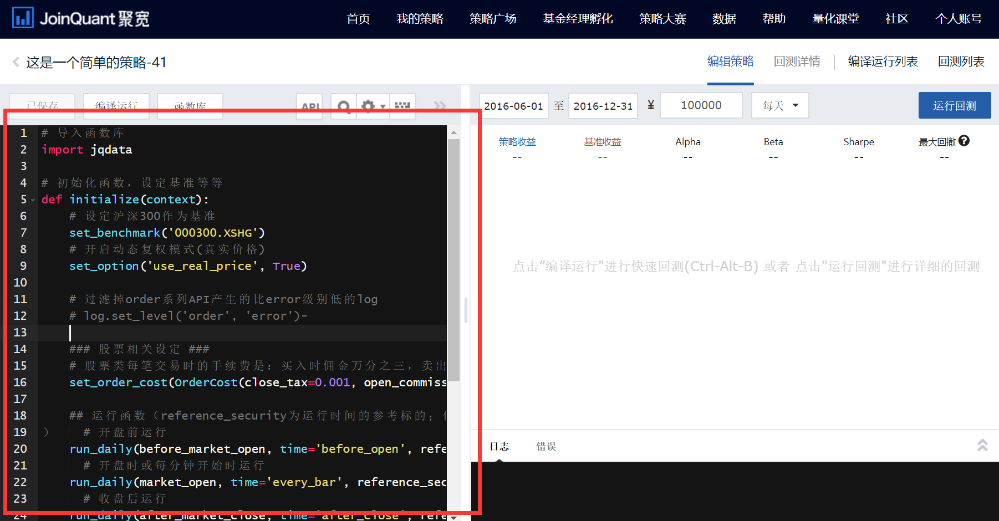
- 两种写法用哪个好？
- 写法一是从前的老写法，将逐步弃用，写法二是聚宽系统改进后的新写法，推荐使用写法二。
- def、context等都是什么意思？
- 其实是在调用聚宽提供好的函数，展开讲很复杂，不理解的话先记住，后面的学习内容会让你理解。
2.5 框架写成代码了，那例子的完整的代码该怎么写呢？
剩下的两行代码这么写。完全理解需要学习后续的内容，此处不要求理解。知道大概什么样子往哪里写即可。
选定要交易的股票为平安银行：
1
g.security = '000001.XSHE'
买100股的平安银行（市价单写法）:
1
order(g.security, 100)
以写法二为例把剩下的代码补上后，完整代码为：
1
2
3
4
5
6def initialize(context):
run_daily(period,time='every_bar')
g.security = '000001.XSHE'
def period(context):
order(g.security, 100)
2.6 那么现在这些代码就可以运行了吗？
- 是的。以写法二为例，如图把代码写到策略编辑区，设置好初始资金与起止时间（比如初始资金100000元，起止时间20160601-20161231），频率设置成天。点击编译运行，运行结束后就可以看到结果了。
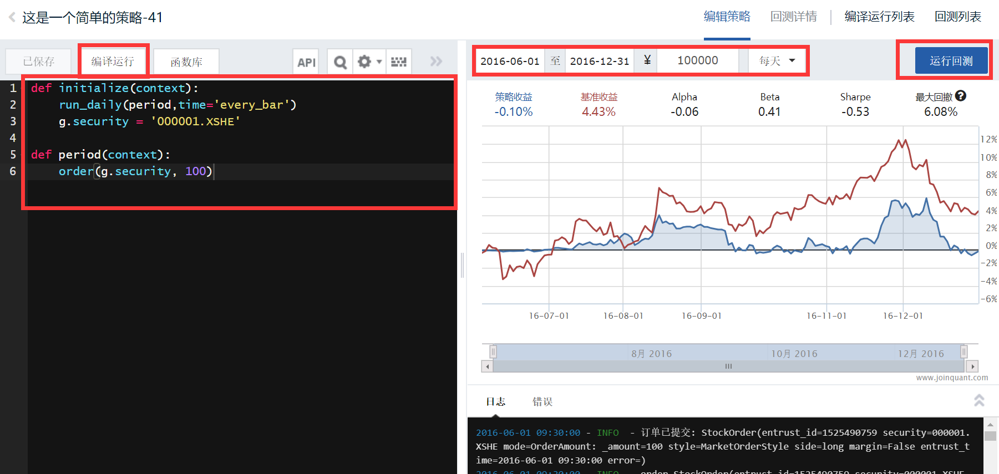 - 可以看到，若你20160601有初始资金100000元，每个交易日尝试买100股的平安银行，到20161231，你的收益曲线将如图中蓝线般增长。图中红线是基准收益（默认是沪深300指数，代表整个市场增长水平）
- 接下来，点击运行回测，运行结束后就可以看到更为详细的结果，包括下单记录、持仓记录等。
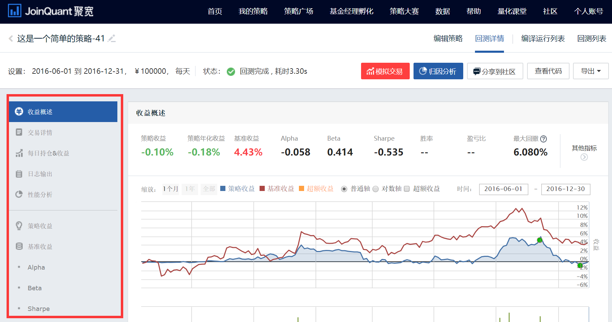
2.7 策略出错不能运行？
策略不能运行时，日志中会报错并给出一定的提示信息，像这样：
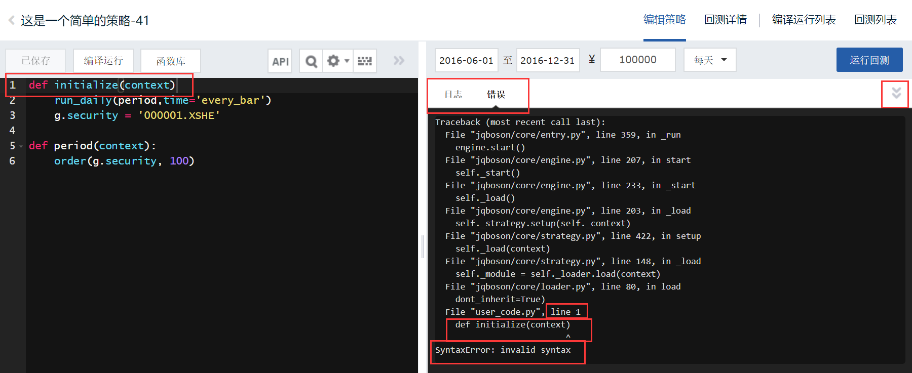首先注意，右上角的箭头按钮能展开运行日志。看到日志中，最后一行是错误的提示信息：
1
2
3SyntaxError: invalid syntax
汉义是 语法错误：不合法的语法。最后一行之前的是错误的位置信息，一般只看后面就行。
1
2
3File "user_code.py", line 1
def initialize(context)
^意思是文件user_code.py（就是你的策略代码）的第一行，“^”符号指向的位置有错。你到代码中的这个位置看下，会发现少个冒号。
为了顺利运行策略，需要耐心解决错误，但错误的原因极度的复杂多样（所以日志的报错信息也多种多样，不止图上一种），故在此只针对例子讲下新手容易犯的错误：
- 符号要用英文输入法。下图，代码第一行的冒号是中文的，所以出错
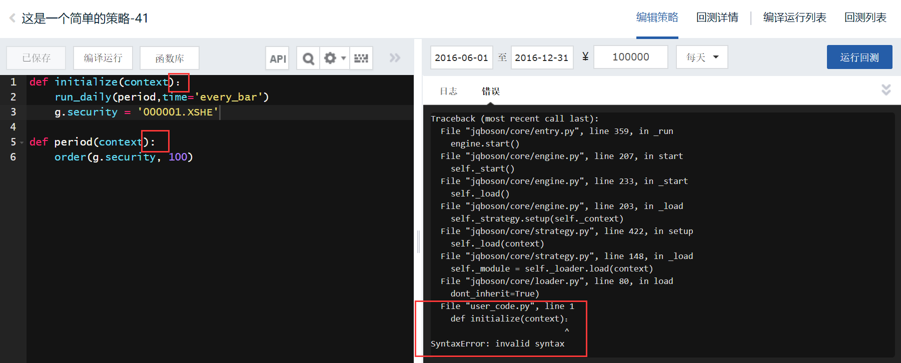 - 拼写不要错。下图，security拼写错了
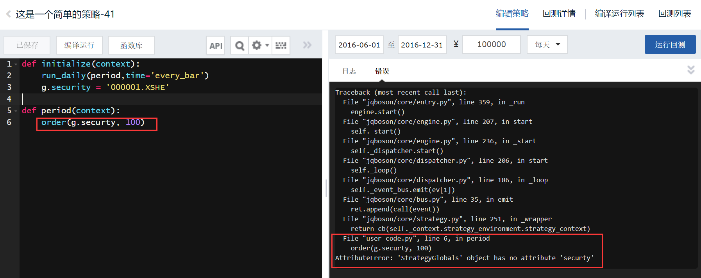 - 缩进要对齐。下图，缩进没对齐。缩进的时候可以按键盘tab键或四个空格。
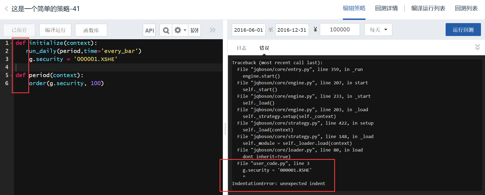
- 符号要用英文输入法。下图，代码第一行的冒号是中文的，所以出错
编程界往往把错误叫bug，而不断调试去除错误的过程叫debug，做量化时也是时常听到的说法，大家应该知道下。
而且debug通常就是要耗费不低于
写bug写代码的时间的，所以会debug是很重要的能力，大家平时debug的时候不妨多思考下，如何更有效率的debug。当然，我们后续也会介绍些debug的技巧。
2.8 回测、编译运行、运行回测都是什么意思？
- 像刚刚那样，用一段时间内的历史的真实行情数据，来验证一个确定的交易策略在这段时间表现如何，这个过程叫回测。
- 运行回测就是是字面意思，让计算机运行这次回测，运行后会告诉你策略在这段时间表现情况，比如收益率、年化收益率、最大回撤、夏普比率等指标，而且一般也会包括下单记录、持仓记录等。
- 编译运行其实也是让计算机运行这次回测，不过相比于点击运行回测，编译运行的结果比运行回测要简单，只有收益率等指标，因此也速度更快。所以，当还不必要得到详细的结果时，或只是想调试下策略的代码，看是否无误可运行时，编译运行就比运行回测更方便。
2.9 周期循环具体是什么时候开始的呢？
- 如果策略频率为天，是每个交易日开始生效，从9:30直到15:00（从股市开市到收市），所以例子中是每个交易日9:30开市循环就开始，一天一次地循环执行买入股票的操作。
- 如果策略频率为分钟，是每个分钟开始时执行，所以例子中的买入股票的操作是每个交易日从9:30:00开始，然后9:31:00，直到14:59:00。接着下一天9:30:00，如此一分钟一次地循环执行的。
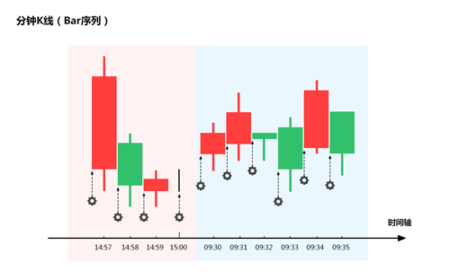 - 虽然频率只有为分钟和每天可选，但通过不同的代码可以实现按周按月周期循环，而且分钟级别里下单时间也是可以自己选的，不过代码的写法则与写法一和写法二那样略有不同，后面会讲到。
3. 下单、函数、API
我们继续以前文策略代码为例进行讲解，如下：
1
2
3
4
5
6def initialize(context):
run_daily(period,time='every_bar')
g.security = '000001.XSHE'
def period(context):
order(g.security, 100)通过前文讲解，现在这段代码中就剩这句下单语句还没讲了。为了理解这条语句，需要学习下python中函数的知识。
1
order(g.security, 100)
3.1 函数与API
函数是封装好的，可重复使用的 ，用来实现专一功能的代码段。函数能使代码易于维护与交流，提高编写策略的效率。通俗的理解是，把一系列代码指令包起来就是一个函数，起个名字就是函数名，之后用这个函数名，就知道这个名字指代那被包起来的一系列代码指令了。
Python语言自带了许多内建函数，比如之前见过的print()、type()都是Python自带的函数，可以直接用。你也可以自己创建函数自己用，这被叫做自定义函数。比如如下这段框架代码其实就是自定义了一个名为period的函数，该函数内包了一个聚宽系统自带的函数order()：
1
2def period(context):
order(g.security, 100)order()的准确称谓其实是API（application programming interface，即应用程序编程接口），API的含义与函数有所不同，解释起来略复杂。不过实际使用中跟函数几乎没有差别，可以理解成聚宽平台基于python封装而成的函数。在聚宽的API文档中你可以看到除order()外其他API。
3.2 使用一个函数
在使用函数的时候，通常需要提供一些参数(也有可能不需要)，函数根据提供的参数，执行一系列的函数作者设计好的操作，往往也会根据提供的参数返回结果（也可能返回为空，即不返回），如下：
1
2
3
4
5
6
7
8
9
10
11
12
13# 用法: 函数名(参数,参数,......)
# 例子如下：
# 提供了两个参数g.security和100，执行了买入g.security中数据对应的股票100股的操作
order(g.security, 100)
# 提供了一个参数"你好"，执行了打印"你好"的操作
print("你好")
# 提供了一个参数"1"给type()函数，type函数执行了识别"1"数据类型的操作，并返回了"1"数据类型为结果。
# type返回的结果被当做参数提供给了print(),print执行了打印type返回的结果的操作
# type与print的嵌套使用，实现了打印"1"数据类型的操作。
print(type("1"))可见，函数的功能多种多样，需要参数、返回的结果亦不尽相同，所以具体怎么用需要看函数作者提供的说明文档，或者看函数内的设计代码自己推断。函数内的代码不见得看得到，看到不一定看得懂，想看懂也可能很辛苦。所以一般函数的用法要看函数作者提供的说明文档。
聚宽设计的函数(如前文所说准确叫法是API)的用法都写在API文档里，位置在聚宽网站导航栏-帮助-API文档。
接下来以order为例讲下文档怎么看。在API文档中找到 order - 按股数下单的说明，如下：
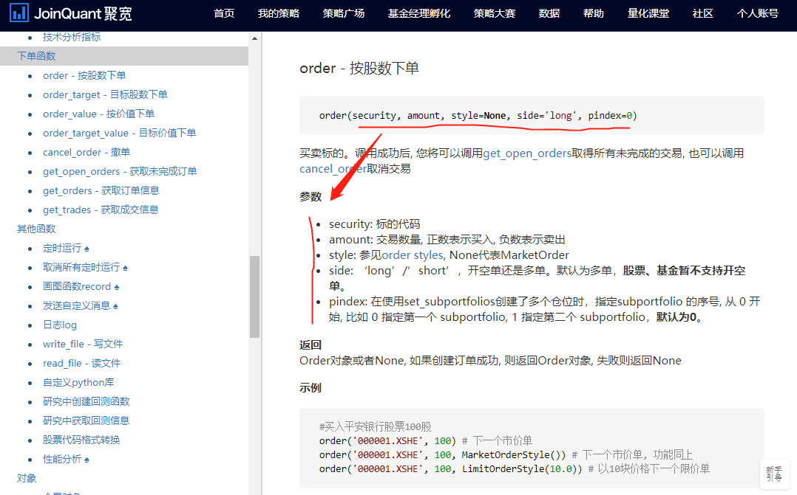可以看到，order可接受的参数有5个,分别是security，amount，style，side，pindex，这五个参数的名字与含义是函数作者设计的。意思是你使用order提供参数的时候，被提供参数将按提供的顺序依次对应这5个参数。比如下面的写法就是错误的。
1
2# 函数会按顺序把100对应为security，即股票代码，把"000001.XSHE"对应为amount，即要交易的数量。所以就会错。
order(100,"000001.XSHE")不按顺序提供参数的正确写法如下：
1
2
3# 用等号表示对应关系，参数名写前，要当做参数的变量或数据写在后
# 如下是把100当做amount参数，把"000001.XSHE"当做security参数。
order(amount=100,security="000001.XSHE")可以发现有些参数后面有等号，如style=None，含义style参数不提供的话，会被默认是None，其他的side=’long’, pindex=0也是一样的道理，如果不提供会被默认是等号后面的内容。所以前文order()只写了两个参数也不会错。注意，security和amount后面没有等号，即没有默认值，则必须提供参数不能省略。
1
2
3# 以下两句含义相同
order("000001.XSHE",100)
order("000001.XSHE",100,None,'long',0)细说下order的各个参数
- security 标的代码，数据类型要求是字符串，想知道 基金、期货、指数的代码都是什么，可以在这里看聚宽数据,比如聚宽数据-向下滚动页面-点击指数数据，可以看到各指数的代码。特别的是股票代码目前没有页面，但只需在平时使用的股票代码后面加后缀就好了，深交所（深交所股票0开头）股票代码后缀为.XSHE,如000001.XSHE,上交所股票代码（上交所股票6开头）后缀为.XSHG 如600000.XSHG。
- amount 交易数量, 正数表示买入, 负数表示卖出，没什么可说的。
- style参数决定下的订单是市价单还是限价单，默认是None代表市价单。目前就用默认吧，限价单以后讲。
- side参数决定是开空单还是多单，默认为多单，股票只能多单，股指期货等其他品类可以开空单。
- pindex参数是在多资金仓位时选择资金仓位的，股票一般用不到。
根据说明文档，order函数是有返回值的，如果创建订单成功, 则返回Order对象, 失败则返回None。有返回值不一定要用，比如前文的例子都没用到这个返回值，实际上策略做的相当完备的时候才可能用到。一般用法是，根据返回值是否是None，判断是否下单成功，成功时，根据返回值可以查询订单或取消订单等。不过具体实现方法、以及Order对象是什么，还需要学习很多的知识，后续可能会讲到。
3.3 自定义函数
Python 定义函数使用 def 关键字，一般格式如下：
1
2def 函数名(参数列表):
函数体函数名即为该函数起的名字，函数体即包在函数中的一系列操作的代码，参数列表即使用函数需要提供的参数，比如一个根据圆半径求周长的函数如下：
1
2
3
4
5# 根据圆半径r求周长l
def yuan(r):
p=3.14
l=2*p*r
return lreturn的含义是结束函数的运行并返回一个值，如上例子中就是返回了算好的周长l。如果return后什么也不写就是返回None即空，如果不写return，函数体运行完后，自动return None。
至此，你应该意识到，函数内部是相对独立的，数据想进来要通过参数传进来，想出去要通过返回值传出去，函数从获得参数到返回值的过程中所产生的数据与变量中没通过返回值传出去的，在函数运行结束后（即返回值后）都将被计算机释放不再存储。如果想函数间通用某变量可以考虑用之前讲的全局变量。
如前文讲使用函数时看到的，可以用等号给参数附加默认值，而且可以用逗号分隔分隔多个参数，例子如下:
1
2
3
4
5# 根据圆半径r求周长l的k分之一
def yuan(r,k=1):
p=3.14
l=2*p*r/k
return l在返回值的时候可以返回多个变量，例子如下:
1
2
3
4
5
6# 根据圆半径r求周长l与面积s的k分之一
def yuan(r,k=1):
p=3.14
l=2*p*r/k
s=p*r*r/k
return l,s使用自定义函数的方法跟前文讲的使用函数的方法一致，需要说明的是定义函数的代码放的位置，如下：
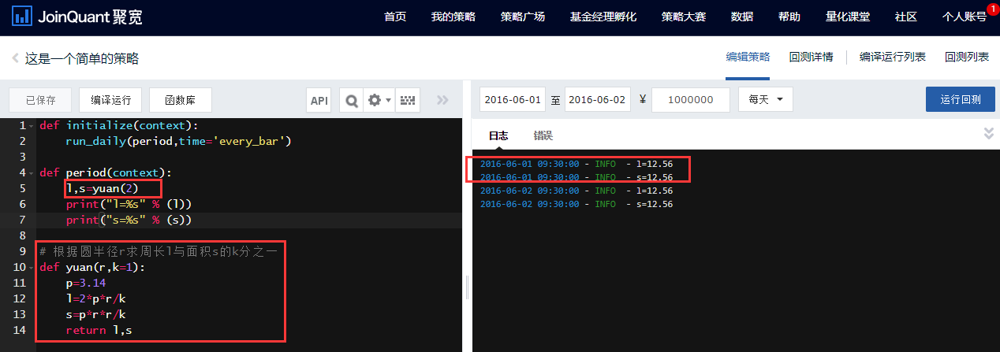
3.4 常用的下单函数
常用的下单函数有四个，使用方法和order()差不多，可能有人自己看API文档就能学会了。接下来我们分别介绍下基本用法，同样的不讲style，side，pindex这三个参数。
order(security,amount)，刚刚细讲过，含义是买卖一定数量的（单位：股）股票。security是股票代码，amount是数量，amount为负数时就是代表卖出了，需要知道的是，国内股票买入最小单位是1手即100股。例子如下：
1
2
3
4# 买入100股平安银行
order("000001.XSHE",100)
# 卖出100股平安银行
order("000001.XSHE",-100)order_target(security,amount)，含义是通过买卖，将股票仓位调整至一定数量（单位：股）。security是股票代码，amount是数量。例子如下：
1
2
3# 调整平安银行的持股数量至1000股
# 即，如果目前平安银行的持股数量低于1000股就买入，高于就是卖出，不高不低就不动。
order_target("000001.XSHE",1000)**order_value(security,value)**，含义是买卖一定价值量（单位：元）股票。security是股票代码，value是价值量。value为负数时就是代表卖出了。例子如下：
1
2
3
4
5
6
7# 买入10000元的平安银行
# 如果当前股票市价是10元，则代表买入1000股
# 如果除不开系统会自动调整成相近的合理数量。卖出时也会。
order_value("000001.XSHE",10000)
# 卖出10000元的平安银行
# 如果当前股票市价是100元，则代表卖出100股
order_value("000001.XSHE",-10000)order_target_value(security,value)，通过买卖，将股票仓位调整至一定价值量（单位：元）。security是股票代码，value是价值量。例子如下：
1
2
3# 调整平安银行的持股价值量至10000元
# 即，如果目前平安银行的持股价值量（按股票市价算）低于10000元就买入，高于就是卖出，不高不低就不动。
order_target_value("000001.XSHE",10000)读者在尝试练习使用这些语句的时候，可以点击运行回测，通过查看回测结果页中的交易详情来看语句的执行效果，同时也可以看下日志。如下：
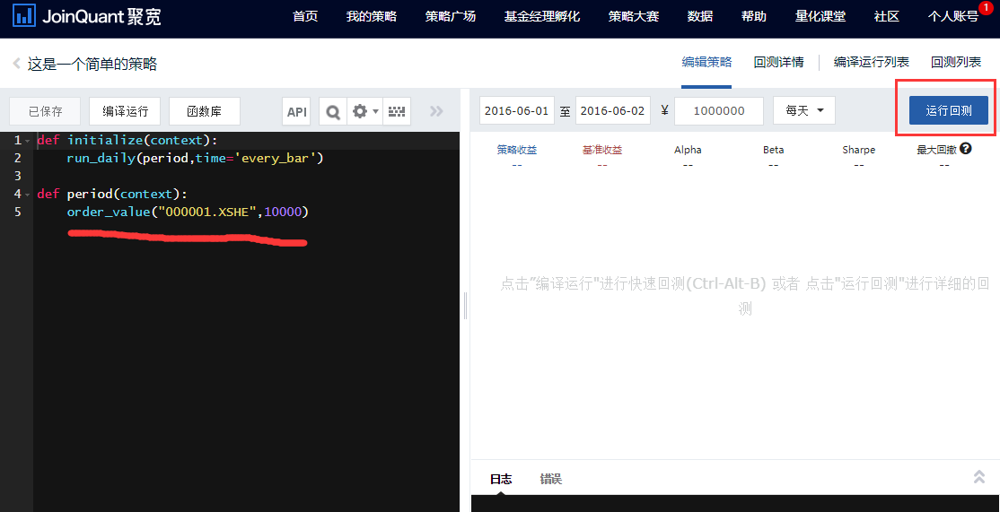
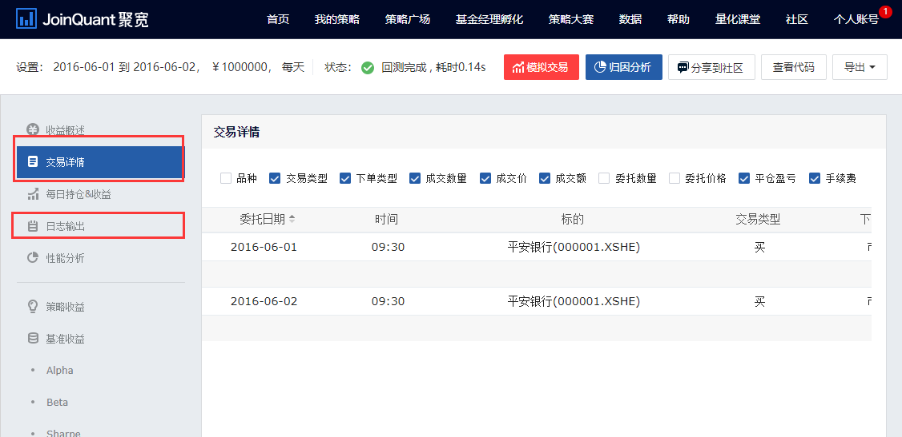股票拆分合并和分红，交易的税费，下单导致成交价向不利的方向波动，这些因素系统都是默认考虑并仿真处理的了，具体的详情以及下的订单系统是如何模拟真实情况撮合成交的，可以看下API文档订单处理。其实新手不用太关注 这些订单处理的细节，不核心，目前也不容易理解，可以等以后自己比较熟悉了再看。
4. 读取context中的数据与条件判断
通过前文的讲解，我们已经能理解最开始的那个简单的策略例子，如下：
1
2
3
4
5
6def initialize(context):
run_daily(period,time='every_bar')
g.security = '000001.XSHE'
def period(context):
order(g.security, 100)接下来，我们将在此基础上进行改进与举例，学习新内容。
4.1 context的结构
- context是一个回测系统建立的Context类型的对象，其中存储了如当前策略运行的时间点、所持有的股票、数量、持仓成本等数据。
- 对象可以理解为特殊类型的变量，对象的结构往往比我们之前见过的list与dict更复杂，被定义好的对象是有名字的，比如context是一个变量，它的变量类型是一个Context类型的对象，就像dict包括key与value，Context类型的对象也包括很多属性，而且可以嵌套另一个种类型的对象，结构见下图。图中只包括了主要与常用的内容，详细介绍可以看API文档：Context对象
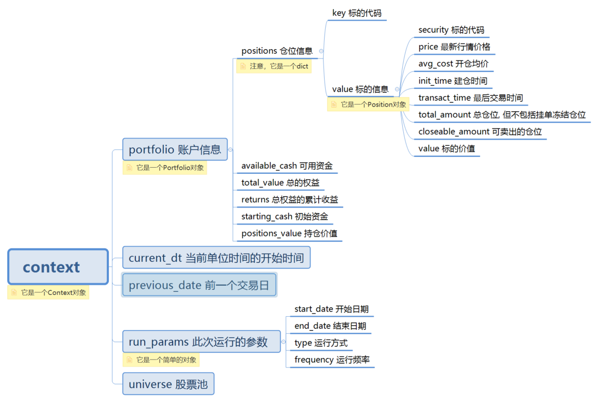
- 关于对象的知识非常复杂繁多，目前我们只需学习如何取用context中的数据就好。
4.2 context中的数据取用方法
获取对象类型变量内包含的数据方法是用英文句号隔开，而当包含的是另一个对象时，只需在应用英文句号隔开即可，例子如下：
1
2
3
4
5
6
7
8
9
10
11# 打印可用资金
print(context.portfolio.available_cash)
# 打印运行频率
print(context.run_params.frequency)
# 打印当前单位时间的开始时间
print(context.current_dt)
# 执行后日志内容如下
# 1000000.0
# day
# 2016-06-01 09:30:00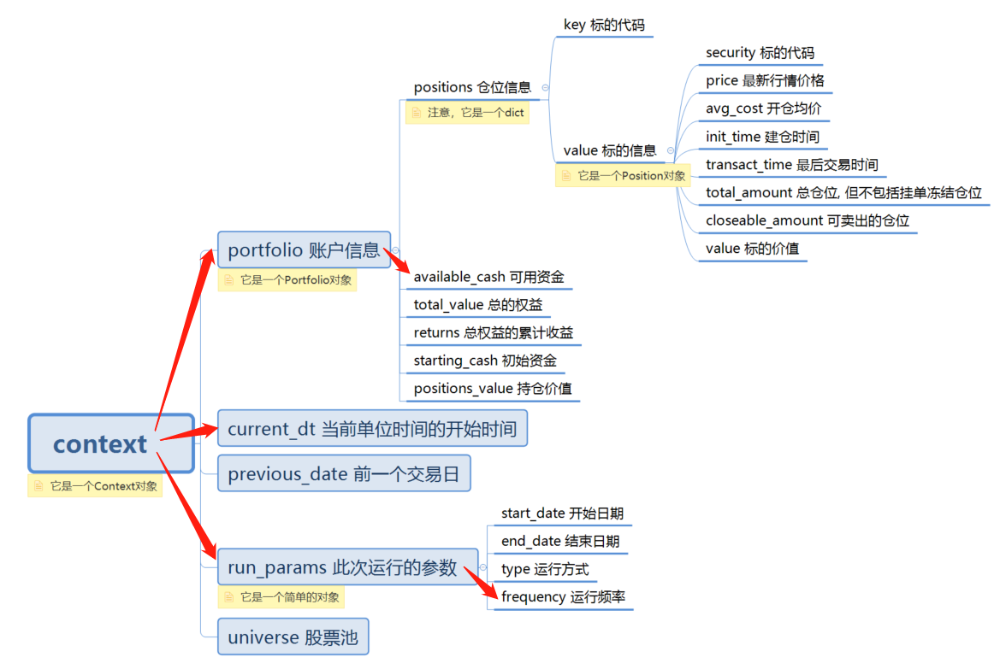
当要获取的对象内的数据是另一种有结构的变量类型时，比如dict或list，正常按照该变量类型进一步取用数据即可。例如context.portfolio.positions是一个dict，我们就可以应用之前讲过的dict 的用法来使用它，例子如下，这次给出了完整代码。
1
2
3
4
5
6
7
8
9
10
11
12
13
14
15
16
17
18
19# context.portfolio.positions的含义是仓位信息，所以为了让它有数据，需要在取之前买入并持有股票。
def initialize(context):
run_daily(period,time='every_bar')
g.security = '000001.XSHE'
def period(context):
order(g.security, 100)
# 打印所有键
print(context.portfolio.positions.keys())
# 打印所有值
print(context.portfolio.positions.values())
# 打印g.security的开仓均价
print(context.portfolio.positions[g.security].avg_cost)
# 执行后日志内容如下
# ['000001.XSHE']
# [UserPosition({'avg_cost': 8.539999999999997, 'security': '000001.XSHE', 'closeable_amount': 0, 'price': 8.53, 'total_amount': 100})]
# 8.54常用的context数据写法如下，推荐自己动手试下。
- 当前时间 context.current_dt
- 当前时间的“年-月-日”的字符串格式 context.current_dt.strftime(“%Y-%m-%d”)
- 前一个交易日 context.previous_date
- 当前可用资金 context.portfolio.available_cash
- 持仓价值 context.portfolio.positions_value
- 累计收益 context.portfolio.returns
- 当前持有股票 context.portfolio.positions.keys()
- 当前持有的某股票的开仓均价 context.portfolio.positions[‘xxxxxx.xxxx’].avg_cost
- 当前持有的某股票的可卖持仓量 context.portfolio.positions[‘xxxxxx.xxxx’].closeable_amount
4.3 条件判断
能够获取context的数据后，我们会考虑利用这些数据丰富策略的逻辑，但在此之前我们还要学习if条件判断语句，如下：
1
2
3
4
5
6
7
8
9
10
11
12
13
14
15
16# 如果 条件1成立为 True 将执行代码块1
# 如果 条件1不成立为False，将判断条件2
# 如果 条件2成立为 True 将执行代码块2
# 如果 条件2还不成立为False，将执行代码块3
if 条件1:
代码块1
elif 条件2:
代码块2
else:
代码块3
# 注意
# elif 可以有多个连续写
# 且elif和else都可以省略
# 条件判断语句中可以嵌套条件判断语句举几个例子：
1
2
3
4
5
6
7
8
9
10
11
12
13
14
15
16
17
18
19
20
21
22
23
24
25
26
27# 打印a、b中最大值
if a>=b:
print(a)
else:
print(b)
# 判断a的正负性
if a>0:
print('正')
elif a<0:
print('负')
elif a==0:
print('零')
# 如果当前是2018-05-04，则下单买入100股平安银行
date=context.current_dt.strftime("%Y-%m-%d")
if date=='2018-05-04':
order('000001.XSHE',100)
# 判断a大小情况
if a>0:
if a<1:
print('a大于0且小于1')
else:
print('a大于等于1')
else:
print('a小于等于0')条件判断语句比较简单，但还需说明的是条件的写法中用到的运算符：
1
2
3
4
5
6
7
8
9
10
11
12
13
14
15
16
17
18
19
20
21
22
23
24
25
26
27
28
29
30
31
32# 写条件常用运算符：
# < 小于
# > 大于
# <= 小于等于
# >= 大于等于
# == 等于
# != 不等于
# and 与，即and两边条件同为真，则真
# or 或，即or两边条件任意一个为真，则真
# not 非，即not右侧条件为真，则假，not右侧条件为假，则真
# 以判断a是否为0的几个写法为例
# 写法1
if a!=0:
print('否')
else:
print('是')
# 写法2
if a>0 or a<0:
print('否')
else:
print('是')
# 写法2
if a>=0 and a=<0:
print('是')
else:
print('否')
# 写法3
if not a==0:
print('否')
else:
print('是')
4.4 止损
狭义的止损是指当亏损达到一定幅度后下单卖出该股票的操作，目的是减少进一步的亏损。广义则指在狭义的思路上衍生的复杂的减少亏损的方法。更多的情况下指狭义的止损。综合运用前文的讲过的内容我们已经可以实现当亏损达到一定幅度后下单卖出该股票的止损操作了，不妨先自己思考下再继续学习。
通过context的数据可以得到持有股票的成本和现价，从而可以算出该股票的盈亏情况，运用条件判断语句根据盈亏情况从而决定是否卖出股票，从而实现止损操作，代码如下：
1
2
3
4
5
6
7
8
9
10
11
12
13
14
15
16
17
18
19
20
21def initialize(context):
run_daily(period,time='every_bar')
g.security = '000001.XSHE'
def period(context):
# 买入股票
order(g.security, 100)
# 获得股票持仓成本
cost=context.portfolio.positions['000001.XSHE'].avg_cost
# 获得股票现价
price=context.portfolio.positions['000001.XSHE'].price
# 计算收益率
ret=price/cost-1
# 打印日志
print('成本价：%s' % cost)
print('现价：%s' % price)
print('收益率：%s' % ret)
# 如果收益率小于-0.01，即亏损达到1%则卖出股票，幅度可以自己调，一般10%
if ret<-0.01:
order_target('000001.XSHE',0)
print('触发止损')设置回测时间为从2017-03-01到2017-03-31，初始资金为100000，频率为天。回测发现会在2017-03-20触发止损。
5. 循环、多股票策略
我们继续以如下这个简单的策略为例进行学习在策略中操作多个股票。
1
2
3
4
5
6def initialize(context):
run_daily(period,time='every_bar')
g.security = '000001.XSHE'
def period(context):
order(g.security, 100)
5.1 用list数据类型存储多个股票
事实上，根据前面的所学我们是可以写多个股票的策略的，无非是把原来单个股票的操作类似地再写几遍，比如下面这个策略就在操作两个股票。
1
2
3
4
5
6
7def initialize(context):
run_daily(period,time='every_bar')
g.security1 = '000001.XSHE'
g.security2 = '000002.XSHE'
def period(context):
order(g.security1, 100)
order(g.security2, 100)显然的问题是，当股票比较多的时候，就要写很多遍，这样的写法就会很麻烦，看着也会比较乱。因此我们要学习其他的写法。首先我们先学习用list数据类型存储多个股票，如下：
1
2
3
4def initialize(context):
run_daily(period,time='every_bar')
# 把两个股票代码作为list存入g.security中
g.security = ['000001.XSHE','000002.XSHE']list数据类型用法前文有讲过，特点是各个元素用逗号隔开后，用中括号把所以元素包起来，比较简单，有疑问不妨去回顾下。接下来是重点内容–循环语句，用它可以方便的批量操作多个股票。
5.2 循环语句
for循环可以遍历任何序列的项目，比如一个list，一般用法如下：
1
2
3# 含义是依次把序列中的元素赋值给for后的变量，并执行循环语句
for 变量 in 一个序列:
要循环的语句，也叫循环体说起来略复杂，其实不难，来看个使用for的例子：
1
2
3
4
5
6
7
8
9
10for k in ['大卫','查理曼','凯撒','亚历山大']:
print(k)
# 执行后日志如下:
# 大卫
# 查理曼
# 凯撒
# 亚历山大
# 可见，for语句的运行过程是，取出list中第一个元素'大卫'并将其赋值给k，然后执行print(k)即在日志中打印k，，此时k中是'大卫'，之后，取出list中第二个元素'查理曼'并将其赋值给k，然后执行print(k)即在日志中打印k，此时k中是'查理曼'，以此类推，直到'亚历山大'被打印。使用for语句时有一个常见一起使用的语句range()，它的功能是生成等差数列的，用法如下：
1
2
3
4
5
6
7
8
9
10
11
12
13
14
15
16
17range(首项,上限,步长)
# 首项 就是这个数列的第一项，可省略，省略后默认为0
# 步长 就是数列的公差、间隔，可省略，省略后默认为1
# 上限 是用来限制数列长度的，即数列不得大于或等于上限。不可省略。
# 另外，python2中range产生的是list，但python3中产生的不是list，但可以用list()这个语句把结果转成list类型，比如list(range(1,7,2))。我们策略编辑环境是python3。
# 一个例子
for j in range(1,7,2):
print(j)
print(list（range(1,7,2)）)
# 执行后日志如下:
# 1
# 3
# 5
# [1, 3, 5]continue与break是重要的修饰循环执行流程的语句，用法如下：
1
2
3
4
5
6
7
8
9
10
11
12
13
14
15
16
17
18
19
20
21
22
23
24
25
26
27
28
29
30
31
32
33
34
35
36
37
38# break的作用是写在循环体中用来跳出当前的整个循环过程
# continue的作用是写在循环体中用来跳出当前的这一次的循环过程
# 通过一个例子应该就能明白两者的作用与区别
# 一个简单的循环例子
for t in range(4):
print(t)
# 执行的结果是
# 0
# 1
# 2
# 3
# 在例子中使用break。可以看到当循环到2的时候，打印omg后，执行break，终止了整个循环过程，不再继续循环3了，所以omg后就什么都没了。
for t in range(4):
if t == 2:
print('omg')
break
print(t)
# 执行的结果是
# 0
# 1
# omg
# 在例子中使用continue。可以看到当循环到2的时候，打印omg后，执行continue，跳过了当前正循环的t为2这个循环过程的余下部分，不在继续执行之后的语句(即print(t)，此时t等于2)，而继续循环3了，所以omg后有打印3。
for t in range(4):
if t == 2:
print('omg')
continue
print(t)
# 执行的结果是
# 0
# 1
# omg
# 3
5.3 写一个简单多股票策略
用刚学的知识把之前简单的策略例子改写成多股票版本，如下。
1
2
3
4
5
6
7
8
9def initialize(context):
run_daily(period,time='every_bar')
# 把两个股票代码作为list存入g.security中
g.security = ['000001.XSHE','000002.XSHE']
def period(context):
# 每个股票买100股
for stk in g.security:
order(stk,100)其实运用所学的知识已经可以进一步的加入很多东西了，比如在这个多股票的基础上在加入之前讲过的止损。不妨自己先尝试下再看下面的样例代码。样例代码如下。
1
2
3
4
5
6
7
8
9
10
11
12
13
14
15
16
17
18def initialize(context):
run_daily(period,time='every_bar')
# 把两个股票代码作为list存入g.security中
g.security = ['000001.XSHE','000002.XSHE']
def period(context):
for stk in g.security:
order(stk,100)
# 获得股票持仓成本
cost=context.portfolio.positions[stk].avg_cost
# 获得股票现价
price=context.portfolio.positions[stk].price
# 计算收益率
ret=price/cost-1
# 如果收益率小于-0.01，即亏损达到1%则卖出股票，幅度可以自己调，一般10%
if ret<-0.01:
order_target(stk,0)
print('触发止损')
6. 获取典型常用数据
6.1 聚宽数据
- 在聚宽数据这个页面可以看到聚宽平台集成好的各大类数据，如下图，点击可以查看详情与用法。
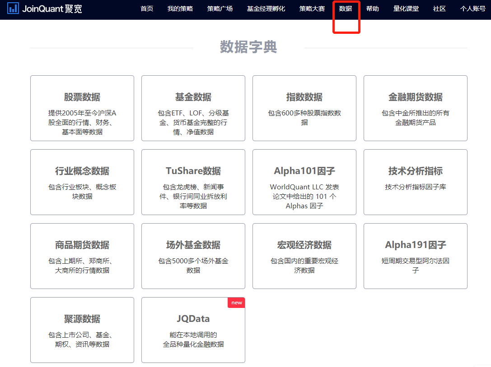 - 但实际上可能有些数据要在API文档里才比较容易能找到，比如龙虎榜数据等。这时用ctrl+f进行网页搜索可以快速搜索需要的数据。
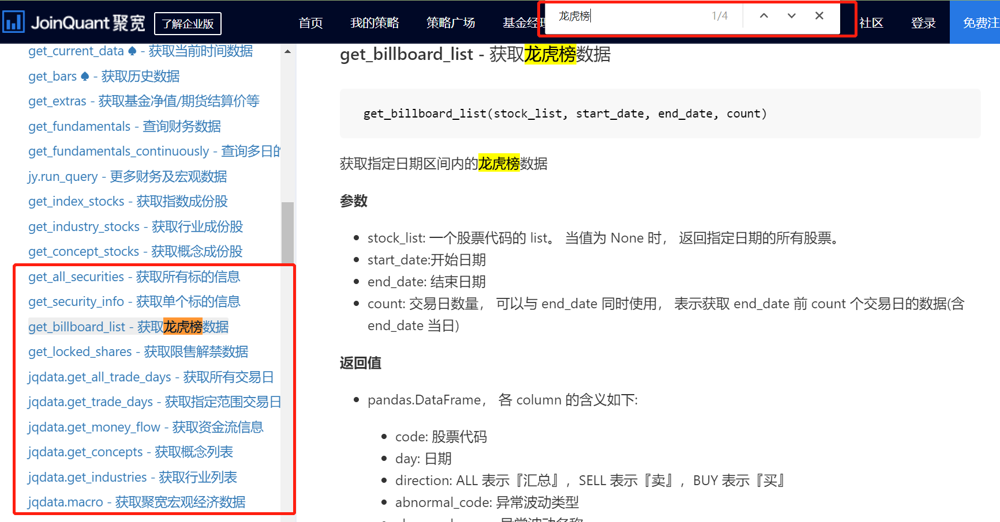 - 接下来会介绍几种常用数据的取用方法，这些取用方法比较典型，掌握后能覆盖基本的数据需求以及较容易的学会使用其他数据。
6.2 获取指数成分股
以免有人不知道指数成分股是什么，简单说明下。为了衡量股市中某一大类股票整体的涨跌情况，通常会用这一类的股票加权平均编制出一个指数，而这些股票则叫做该指数的成分股,一般指数的成分股选取会变动。比如上证指数是用所有上交所的股票编制而成，可以衡量上交所股票整体的涨跌情况，有的股票退市了也就会被剔除成分股。比较常见的指数有上证指数、深证综指、创业板指、沪深300指数、中证500指数、上证50指数等。可以在数据-指数数据-指数列表中找到聚宽支持的指数及其指数代码。同样要善用ctrl+f进行搜索。
获取指数成分股需要用到的API为get_index_stocks
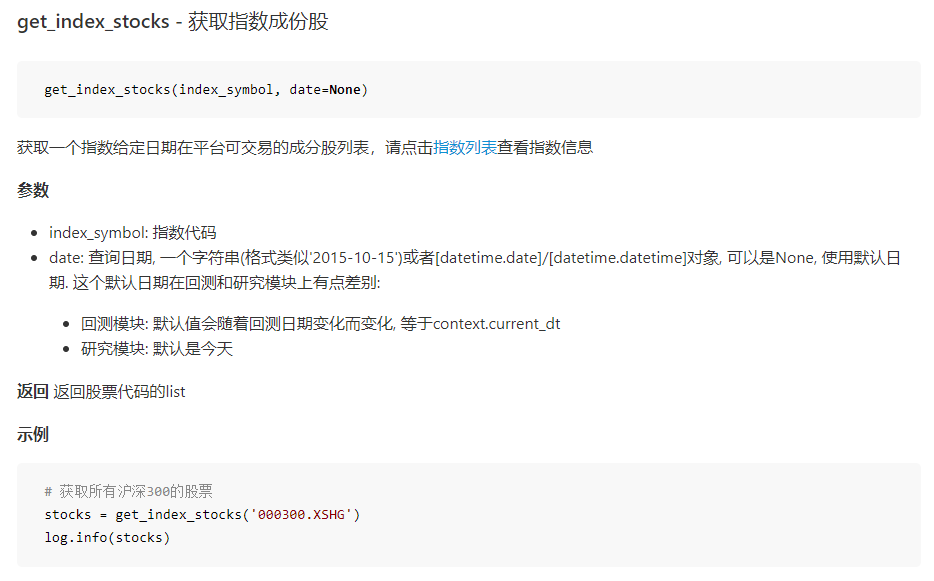之前讲过怎么看API文档以及函数参数的含义，现在应该能直接看说明使用了。补充一个更详细点的例子应该就会用了。
1
2
3
4
5
6
7
8
9# 获取20180301时，上证50指数（000016.XSHG）成分股
t=get_index_stocks("000016.XSHG","2018-03-01")
print(t[0])
print(t)
# 打印日志如下。股票代码在list中被打印出来前面会带有的u代表是对字符串进行unicode编码（略复杂，不懂没关系），只是显示效果，单独打印t[0]时就没有u。
# 600000.XSHG
# [u'600000.XSHG', u'600016.XSHG', u'600019.XSHG', u'600028.XSHG', u'600029.XSHG', u'600030.XSHG', u'600036.XSHG', u'600048.XSHG', u'600050.XSHG', u'600104.XSHG', u'600111.XSHG', u'600309.XSHG', u'600340.XSHG', u'600518.XSHG', u'600519.XSHG', u'600547.XSHG', u'600606.XSHG', u'600837.XSHG', u'600887.XSHG', u'600919.XSHG', u'600958.XSHG', u'600999.XSHG', u'601006.XSHG', u'601088.XSHG', u'601166.XSHG', u'601169.XSHG', u'601186.XSHG', u'601211.XSHG', u'601229.XSHG', u'601288.XSHG', u'601318.XSHG', u'601328.XSHG', u'601336.XSHG', u'601390.XSHG', u'601398.XSHG', u'601601.XSHG', u'601628.XSHG', u'601668.XSHG', u'601669.XSHG', u'601688.XSHG', u'601766.XSHG', u'601800.XSHG', u'601818.XSHG', u'601857.XSHG', u'601878.XSHG', u'601881.XSHG', u'601985.XSHG', u'601988.XSHG', u'601989.XSHG', u'603993.XSHG']
6.3 获取股票行情数据
此处的股票行情数据指
SecurityUnitData
里面的所有基本属性，以下列举类常用字段，详情请看文档。
- open: 时间段开始时价格
- close: 时间段结束时价格
- low: 最低价
- high: 最高价
- volume: 成交的股票数量
- money: 成交的金额
- factor: 前复权因子
- avg: 这段时间的平均价
- pre_close: 前一个单位时间结束时的价格
- paused: 这只股票是否停牌，是则为1，否则为0
history（多只股票，一个字段）
API文档：history
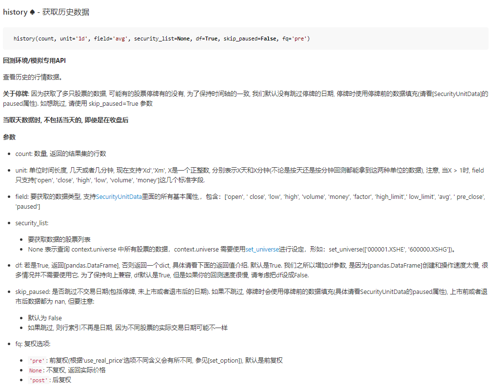可以同时获得多个股票的数据，但只能获得相同的一个数据字段。如获得 平安银行，建设银行，农业银行这3只股票，前3天的交易额。
默认不跳过不交易日期，由skip_paused参数控制。
df参数控制返回结果的数据类型，默认是True代表dataframe类型，稍后我们会讲到，当df为False时就为之前讲过的dict类型。
fq参数控制复权方式，往往可以不管它直接用默认的前复权即可。复权的含义不难，解释略麻烦，建议自行搜索学习下。
接下来介绍的API还会有skip_paused、df、fq参数，就不再提了。这三个参数新手可以以后慢慢了解，现在不管也没关系，如果不想用dataframe，会把df参数调成False(或0)就行。
1
2
3
4
5
6
7
8
9
10
11
12
13
14
15
16# 例子 df=True，返回dataframe类型
w=history(count=3, field='money', security_list=['000001.XSHE','000002.XSHE'])
print(w)
# 结果如下：
# 000001.XSHE 000002.XSHE
# 2016-08-29 5.322954e+08 1.796321e+09
# 2016-08-30 5.618541e+08 2.072873e+09
# 2016-08-31 4.638758e+08 5.748581e+09
# 例子 df=False，返回dict类型
w=history(count=3, field='money', security_list=['000001.XSHE','000002.XSHE'],df=False)
print(w)
# 结果如下：
# {'000001.XSHE': array([ 5.32295362e+08, 5.61854066e+08, 4.63875763e+08]), '000002.XSHE': array([ 1.79632055e+09, 2.07287325e+09, 5.74858107e+09])}
attribute_history（一只股票，多个字段）
只能获取单独一个股票的数据，但可以同时获得多个字段的数据。如获得 平安银行这一只股票，前3天的交易额，交易量，最高价，最低价等。
默认跳过不交易日期，由skip_paused参数控制。
1
2
3
4
5
6
7
8
9# 例子
w=attribute_history(security='000001.XSHE',count=3, fields=['money','high'])
print(w)
# 结果如下：
# money high
# 2016-08-29 5.322954e+08 9.31
# 2016-08-30 5.618541e+08 9.33
# 2016-08-31 4.638758e+08 9.36
Pandas.DataFrame
返回的财务数据是DataFrame类型，这是一种二维表结构的功能强大的数据类型，常用于数据处理与分析。我们以刚刚的例子介绍下dataframe最常用的获取数据的方法。
1
2
3
4
5
6
7
8
9# 一个dataframe类型的例子
w=attribute_history(security='000001.XSHE',count=3, fields=['money','high','open'])
print(w)
# 结果如下：
# money high open
# 2016-08-30 5.618541e+08 9.33 9.29
# 2016-08-31 4.638758e+08 9.36 9.32
# 2016-09-01 4.548486e+08 9.38 9.35dataframe是一个二维表，包括index（行标签、索引）、columns（列标签）、values（值）三个部分。取用方法如下，注意三个部分的数据类型不是固定的，因此功能很灵活但也更难使用。
1
2
3
4
5
6
7
8
9
10
11
12
13
14
15
16
17
18
19
20
21# 获取index
print(w.index)
# 结果如下，是datatimeindex类型，很特殊，不常用，建议新手回避。
# DatetimeIndex(['2016-08-30', '2016-08-31', '2016-09-01'], dtype='datetime64[ns]', freq=None, tz=None)
# 获取columns
print(w.columns)
# 结果如下，是index类型
# Index([u'money', u'high', u'open'], dtype='object')
# 可以用list()将其转成list
print(list(w.columns))
# 结果如下
# ['money', 'high', 'open']
# 获取values
print(w.values)
# 结果如下，是一个嵌套的list
# [[ 5.61854066e+08 9.33000000e+00 9.29000000e+00]
# [ 4.63875763e+08 9.36000000e+00 9.32000000e+00]
# [ 4.54848634e+08 9.38000000e+00 9.35000000e+00]]选择dataframe某几列
1
2
3
4
5
6
7
8
9
10
11
12
13
14
15
16
17
18
19
20
21
22
23
24
25
26
27
28
29
30# 按标签获取某几列.loc[:,[列标签名,...]]
print(w.loc[:,['open','high']])
# 结果如下
# open high
# 2016-08-29 9.28 9.31
# 2016-08-30 9.29 9.33
# 2016-08-31 9.32 9.36
# 按位置获取某几列.iloc[:,[位置,...]]，位置的含义是第几个，从0开始。下文同。
print(w.iloc[:,[0,2]])
# 结果如下
# money open
# 2016-08-29 5.322954e+08 9.28
# 2016-08-30 5.618541e+08 9.29
# 2016-08-31 4.638758e+08 9.32
# : 即冒号，可以代表全部，iloc或loc都可以。
print(w.iloc[:,:])
# 结果如下
# money high open
# 2016-08-29 5.322954e+08 9.31 9.28
# 2016-08-30 5.618541e+08 9.33 9.29
# 2016-08-31 4.638758e+08 9.36 9.32
# 选择后的数据依然是dataframe类型，用.values可以获取数据。对后文的行情况也成立。
print(w.iloc[:,[0,2]].values)
# 结果如下,是个list
# [[ 5.61854066e+08 9.29000000e+00]
# [ 4.63875763e+08 9.32000000e+00]
# [ 4.54848634e+08 9.35000000e+00]]选择dataframe某几行
1
2
3
4
5
6
7
8
9
10
11
12
13
14
15
16
17
18# 按标签获取某几行.loc[[行标签名,...],:]
print(w.loc[['2016-08-29','2016-08-31'],:])
# 此处这样写会报错，原因是当前的行标签类型是DatetimeIndex，不是字符串，所以使用标签名时要注意数据类型。而时间类型的数据处理往往非常麻烦，因此行或列标签名是日期情况下建议新手回避，改使用位置获取。
# 按位置获取某几行.iloc[[位置,...],:]
print(w.iloc[[0,2],:])
# 结果如下
# money high open
# 2016-08-29 5.322954e+08 9.31 9.28
# 2016-08-31 4.638758e+08 9.36 9.32
# : 即冒号，行情况下依然可以代表全部
print(w.loc[:,:])
# 结果如下
# money high open
# 2016-08-29 5.322954e+08 9.31 9.28
# 2016-08-30 5.618541e+08 9.33 9.29
# 2016-08-31 4.638758e+08 9.36 9.32dataframe 行列转置
1
2
3
4
5
6
7# 行列转置的意思就是按对角线行列反转，方法是.T
print(w.T)
# 结果如下
# 2016-08-29 2016-08-30 2016-08-31
# money 5.322954e+08 5.618541e+08 4.638758e+08
# high 9.310000e+00 9.330000e+00 9.360000e+00
# open 9.280000e+00 9.290000e+00 9.320000e+00回过头来解释下pandas的含义，pandas是一个模块或者叫库，可以让我们直接利用其中包含的已经设计好的函数或数据类型，加快我们的工作效率。pandas主要功能是数据处理与分析，其中dataframe就是属于pandas的，是原生的python语言没有的。随着深入的学习，你会遇到其他的功能模块，一般来说要使用一个模块是要用一行代码加载导入的，但pandas聚宽系统已经自动加载了，不必额外写代码导入了。
6.4 获取股票财务数据
股票财务数据这里是指发股票的公司发布的财务报表中的数据。可以在聚宽数据-股票财务数据查看数据详情。
财务报表简称财报，是用来向股东汇报企业经营情况的，上市公司必须按季度公布财报，一年有四季所以财报依发布次序一季报、半年报（也称中报）、三季报、年报，而具体的发布日期在一定期限内即可并非固定，年报要求年度结束四个月内披露，半年报是上半年结束后两个月内，一季报与三季报是季度结束后一个月内。特别的是像总市值、市盈率这种跟股价挂钩的市值数据是每天更新的。
获取股票财务数据需要用到的API为get_fundamentals。这个语句的用法较为复杂，下文对文档进行补充说明，文档还是要看的。
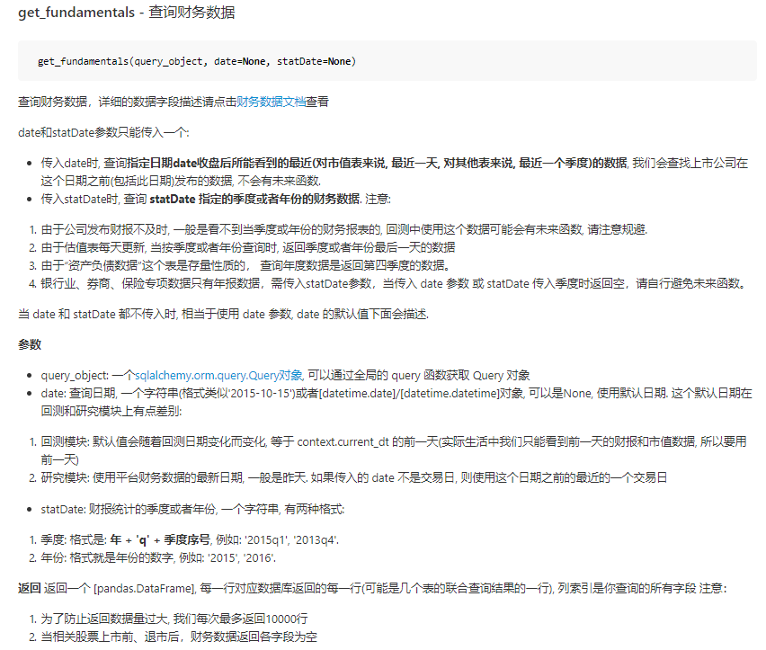未来函数是什么？
- 我们做回测去验证策略时，其实是用历史数据去模拟当时的市场从而得知策略在历史上表现如何，但是如果策略利用了历史当时无法得到的信息，往往就会造成回测结果极大失真，这时我们会说这个策略有未来函数。
- 举一个典型的有未来函数的策略:每天买明天涨停的股票。 事实上你是不能知道明天哪个股票涨停的，所以现实中是不能实现的，但是我们做回测是用的历史数据，所以我们其实是能实现用2012年的数据对这个买明日涨停股的策略做回测的，毕竟现在已经过了2012年，2012年每天哪个股票会涨都是已经知道的了。这样的有未来函数的回测结果肯定是没价值的，因为现实中不能实现，尽管回测结果有时特别喜人。
date与statDate的问题
- 传入date时，查询指定日期date 所能看到的最近的数据。 回测时不填则默认值会为回测日期的前一天（模拟现实，避免未来函数）。date参数的要求为格式类似’2015-01-15’的字符串，datetime类型的时间数据也是可以的，不过略复杂不展开。
- 传入statDate时, 查询 statDate 指定的季度（例如’2015q1’、 ‘2013q4’的字符串）或者年份（如’2015’、’2013’的字符串）的财务数据。这种用法需要注意的地方比较多，请注意文档中提到的问题。
- date和statDate参数只能同时传入其中一个。当 date 和 statDate 都不传入时，相当于使用 date 参数，date 的默认值会为回测日期的前一天。文档中提到的回测模块就是指我们编写策略的功能模块，研究模块我们之后会介绍。因此，为方便在回测中使用，date 和 statDate 都不传入。
单季度与报告期。
- 之前讲过，财务数据按季度发布，一般财经网站上提供的财务数据是默认按报告期提供的，即每季度统计的周期跨度分别为第一季度、前两个季度、前三个季度、前四个季度（全年）。
- 而聚宽考虑到量化分析，提供的财务数据全是单季度的，即每季度统计的周期跨度分别为第一季度、第二季度、第三季度、第四季度。
- 因此，当你发现聚宽财务数据比财经网站的财务数据差的很多时，很可能是单季度与报告期的差别造成的。
query_object参数以及快速上手模板
query_object参数是要求传入一个Query对象用于描述所需的数据，这个东西展开讲相当于一门小的编程语言，麻烦而不必要，这里提供一个快速上手的模板用来产生query_object参数，多数情况下往里套就可以了，例子如下，建议对比文档里的例子看看。
1
2
3# 快速上手模板
# query(表.字段).filter(筛选条件).order_by(排序方法).limit(数量上限)
#比较长的话可以分行写表和字段可以在财务数据文档查看，如下。表和字段可以写多个用逗号隔开，只写表名不写字段代表选择该表的所有字段。注意看含义与单位。
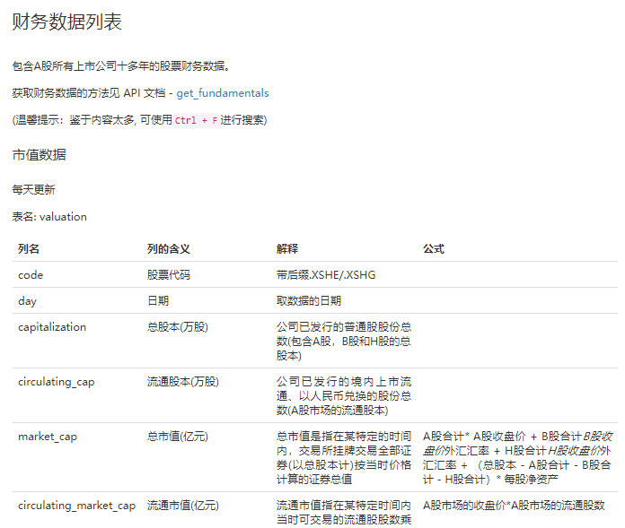
筛选条件跟讲if判断时用的条件是一样的，多个条件用逗号隔开代表与（and）的关系。特别的是要用复杂的与或非的逻辑关系时，在此处and、or、not是不能用的，要对应的改用&（与）、|（或）、~（非）。
排序的写法比较简单，就是要作为排序标准的字段后面加.desc()即由大到小，或.asc()即由小到大。
数量上限可以自己设置，代表最多返回的数据条数。不过系统强制限制每次最多返回10000条，就算你自己在此处限制比10000多也没用。
1
2
3
4
5
6
7
8
9
10
11
12
13
14
15
16
17
18
19
20
21
22
23
24# 例子
# 获取 市值表.股票代码，资产负债表.未分配利润
q=query(valuation.code,balance.retained_profit
# 筛选 市值大于100 并且 市盈率小于10
).filter(valuation.market_cap>100,valuation.pe_ratio < 10
# 排序 按市值从大到小排
).order_by(valuation.market_cap.desc()
# 数量 上限10条数据
).limit(10)
w=get_fundamentals(q)
print(w)
# 结果如下：
# code retained_profit
# 0 601398.XSHG 8.566400e+11
# 1 601939.XSHG 7.400340e+11
# 2 601288.XSHG 4.644490e+11
# 3 601988.XSHG 5.267460e+11
# 4 600036.XSHG 1.816520e+11
# 5 601328.XSHG 9.208500e+10
# 6 600000.XSHG 1.037620e+11
# 7 600016.XSHG 1.277570e+11
# 8 601166.XSHG 1.573490e+11
# 9 601998.XSHG 1.298680e+11
6.5 本地获取聚宽数据-JQData
申请地址： https://www.joinquant.com/default/index/sdk?f=home&m=banner
安装方法： https://www.joinquant.com/post/12479
调用方法：
from jqdatasdk import *
import jqdatasdk as jq
jq.auth(‘手机号’, ‘密码’)
df = jq.get_price(“000001.XSHE”)
print(df)
JQData使用方法
https://www.joinquant.com/data/dict/jqDataSdk
JQData提供哪些数据及数据更新频率
https://www.joinquant.com/help/api/help?name=JQData#JQData提供哪些数据及数据更新频率
JQData，jqdatasdk和jqdata的关系
https://www.joinquant.com/help/api/help?name=faq#JQDatajqdatasdk和jqdata的关系
有关权限和付费问题请咨询管理员微信：jqdata02
7. 综合之前所学写一个策略
- 通过前文基础知识的学习，本文将引导读者运用所学写成一个策略。如果发现某些知识忘了很正常，回头再看就行，用到什么去学什么学习的效率更高。
7.1 灵感细化
之前也提到过策略灵感的来源多种多样，可能是通过阅读、通过与人交流、或是通过自己感悟与研究等等。灵感最初可能只是模糊的感觉或疑问，比如“感觉低市盈率的股票好像长期收益更好”、“当股价一旦超过整百的时候会不会更容易继续涨一段”、“这个股票和那个股票的股价数据看起来好像符合某种统计规律”等等。验证灵感的一个基本方法是把灵感细化，写成策略做回测。
现在你听说了这样一件事，小市值股票过去很长一段时间内收益特别好，但最近不太行了。你觉得这件事比较有价值，想要写成策略来回测验证下。请思考下，应该写一个什么样的策略来验证这件事呢？
为了验证灵感，我们把灵感细化成内容如下的这样一个策略。
1
2
3每天找出市值排名最小的前10只股票作为要买入的股票。
若已持有的股票的市值已经不够小而不在要买入的股票中，则卖出这些股票。
买入要买入的股票，买入金额为当前可用资金的10分之一。考虑到不一定要选10个股票，股票数量应该是个可以方便调节的变量，因此策略内容改成如下这样更好。
1
2
3
4设定好要交易的股票数量stocksnum
每天找出市值排名最小的前stocksnum只股票作为要买入的股票。
若已持有的股票的市值已经不够小而不在要买入的股票中，则卖出这些股票。
买入要买入的股票，买入金额为当前可用资金的stocksnum分之一。
7.2 逐步实现
因为最终目的是要写成代码交给计算机回测，因此要逐步把文字的意思用代码实现，首先要把这个策略放到之前讲过的初始化与周期循环的策略框架中，如下。
1
2
3
4
5
6
7
8def initialize(context):
run_daily(period,time='every_bar')
# 代码：设定好要交易的股票数量stocksnum
def period(context):
# 代码：找出市值排名最小的前stocksnum只股票作为要买入的股票
# 代码：若已持有的股票的市值已经不够小而不在要买入的股票中，则卖出这些股票。
# 代码：买入要买入的股票，买入金额为可用资金的stocksnum分之一接下来，你只需要逐步的把策略的全部内容用代码实现出来，技巧是把复杂的内容拆分成多个简单的内容，逐步实现，对于不确定的东西print打印出来看看。往下读之前，建议自己独立实现下试试，基本都是用讲过的内容。遇到困难可以看下我下面给出提示，所有提示后面会给出参考代码。
提示
- 代码：设定好要交易的股票数量stocksnum。这句非常简单，需要注意的是要用到之前讲过的全局变量。
- 代码：找出市值排名最小的前stocksnum只股票作为要买入的股票。首先使用get_all_securities（获取所有股票函数）取其index（行标签、索引）得到股票列表。然后，使用获取财务数据的方法找出当前全市场股票中市值最小的前stocksnum个的股票代码。
- 代码：若已持有的股票的市值已经不够小而不在要买入的股票中，则卖出这些股票。使用context数据获取当前持仓情况，用for循环语句与if判断语句判断股票是否在当前持仓中，用in判断是否一个元素在某list中，用下单API实现卖出操作。
- 代码：买入要买入的股票，买入金额为可用资金的stocksnum分之一。使用context数据获取当前可用资金总量，用for循环与下单API实现买入每个要买入的股票。
参考代码
1
2
3
4
5
6
7
8
9
10
11
12
13
14
15
16
17
18
19
20
21
22
23
24
25
26
27
28
29
30
31
32def initialize(context):
run_daily(period,time='every_bar')
# 设定好要交易的股票数量stocksnum
g.stocksnum = 10
def period(context):
# 代码：找出市值排名最小的前stocksnum只股票作为要买入的股票
# 获取当天的股票列表
scu = get_all_securities(date= context.current_dt).index.tolist() # 使用“获取所有当前时间股票”的行标签（实际上就是股票代码）做成一个列表
# 选出在scu内的市值排名最小的前stocksnum只股票，严格按照query的语法，# query(表valuation.字段).filter(筛选条件).order_by(排序方法).limit(数量上限); 将找到的十只小市值股票代码传给变量q
q=query(valuation.code # 只返回（只查询）符合要求的股票代码字段
).filter(
valuation.code.in_(scu) # 筛选条件股票要来源于我们刚刚创建的股票列表
).order_by(
valuation.market_cap.asc() # 按照市值的从小到大排序
).limit(g.stocksnum) # 查询数量上限10
df = get_fundamentals(q) # 查询财务数据函数，因为query中查询的字段只有股票代码，所以传给参数df的也只有股票代码
# 选取股票代码并转为list
buylist=list(df['code']) # 我们的股票池
# 代码：若已持有的股票的市值已经不够小而不在要买入的股票中，则卖出这些股票。
# 对于每个当下持有的股票进行判断：现在是否已经不在buylist里，如果是则卖出
for stock in context.portfolio.positions: # context.portfolio.positions指账户的仓位信息（一个字典key为股票代码，value为股票信息），这里的stock实际就是遍历仓位信息中的股票代码
if stock not in buylist: #如果stock不在buylist
order_target(stock, 0) #调整stock的持仓为0，即卖出，stock实际上就是股票代码
# 代码：买入要买入的股票，买入金额为可用资金的stocksnum分之一
# 将资金分成g.stocksnum份
position_per_stk = context.portfolio.available_cash/g.stocksnum # 账户可用资金/10
# 用position_per_stk大小的g.stocksnum份资金去买buylist中的股票
for stock in buylist:
order_value(stock, position_per_stk)
1 | # 上述代码的单元测试 |
1 | ['000001.XSHE', |
1 | a=get_all_securities(date= '2019-02-07').index.tolist() |
| code | |
|---|---|
| 0 | 002499.XSHE |
| 1 | 600260.XSHG |
| 2 | 600139.XSHG |
| 3 | 600242.XSHG |
| 4 | 600311.XSHG |
| 5 | 600781.XSHG |
| 6 | 002781.XSHE |
| 7 | 300330.XSHE |
| 8 | 300309.XSHE |
| 9 | 002569.XSHE |
1 | a=get_all_securities(date= '2019-02-07').index.tolist() |
| id | code | pubDate | pe_ratio | turnover_ratio | pb_ratio | ps_ratio | pcf_ratio | capitalization | market_cap | circulating_cap | circulating_market_cap | day | pe_ratio_lyr | |
|---|---|---|---|---|---|---|---|---|---|---|---|---|---|---|
| 0 | 93418619 | 002499.XSHE | 2023-02-08 | -6.1421 | NaN | -22.5506 | 1.6834 | 29.1708 | 18900.0000 | 3.1752 | 18899.3242 | 3.1751 | 2023-02-08 | -10.7096 |
| 1 | 93420403 | 600260.XSHG | 2023-02-08 | -0.1863 | NaN | -0.2214 | 0.6897 | -15.7960 | 99488.6094 | 4.6760 | 99488.6094 | 4.6760 | 2023-02-08 | -0.0552 |
| 2 | 93422822 | 600139.XSHG | 2023-02-08 | -3.5879 | 10.3435 | -0.9002 | 5843.8311 | 201530.3906 | 66189.0547 | 5.3613 | 66189.0547 | 5.3613 | 2023-02-08 | -0.8411 |
| 3 | 93422390 | 600242.XSHG | 2023-02-08 | -1.1526 | 2.0953 | -14.9207 | 18.4809 | 39.7451 | 45666.5117 | 5.9823 | 45129.4531 | 5.9120 | 2023-02-08 | -1.2672 |
| 4 | 93421449 | 600311.XSHG | 2023-02-08 | -1.8449 | 17.3038 | -3.4052 | 0.7653 | -145.8034 | 66560.0000 | 6.1901 | 66560.0000 | 6.1901 | 2023-02-08 | -2.1453 |
| 5 | 93420755 | 600781.XSHG | 2023-02-08 | -0.2780 | 0.2274 | 4.1403 | 0.6731 | -52.9425 | 62715.7500 | 9.0311 | 37426.3203 | 5.3894 | 2023-02-08 | -0.2823 |
| 6 | 93420844 | 002781.XSHE | 2023-02-08 | -0.5129 | 0.4797 | -2.2722 | 0.5153 | -26.8507 | 22500.0000 | 9.1125 | 22392.1445 | 9.0688 | 2023-02-08 | -0.5214 |
| 7 | 93419785 | 300330.XSHE | 2023-02-08 | -60.6560 | NaN | 2.5263 | 3.3798 | 142.6931 | 16991.8555 | 9.2096 | 16795.4570 | 9.1031 | 2023-02-08 | 90.5919 |
| 8 | 93421460 | 300309.XSHE | 2023-02-08 | -1.1453 | 19.4870 | -0.7860 | 14.7440 | -1337.5052 | 88612.3750 | 9.2157 | 83741.6719 | 8.7091 | 2023-02-08 | -0.9002 |
| 9 | 93421590 | 002569.XSHE | 2023-02-08 | -11.7480 | 0.3012 | 5.3259 | 5.0566 | 41.5131 | 14401.0000 | 9.4903 | 13967.5352 | 9.2046 | 2023-02-08 | 29.1500 |
可以看到市值的从小到大排列的
7.3 调整与改进
至此这已经是一个完整可运行的策略了，你可以试试看，回测结果应该已经可以一定程度上验证灵感了。不过虽然策略完成，我们却发现现在策略是每天进行一次选股并交易，我们觉得这太频繁了，希望能实现通过一个变量period控制操作的周期，即每period天进行一次选股并交易。
依然建议先试着自己做下，提示如下，提示之后是参考代码。
- 像stocksnum那样用全局变量的方式建立period变量
- 用一个变量记录策略运行天数
- 用取余运算配合if判断语句判断是否又经过period天
参考代码
1
2
3
4
5
6
7
8
9
10
11
12
13
14
15
16
17
18
19
20
21
22
23
24
25
26
27
28
29
30
31
32
33
34
35
36
37
38
39
40def initialize(context):
run_daily(period,time='every_bar')
# 设定好要交易的股票数量
g.stocksnum = 7
# 设定交易周期
g.period = 13
# 记录策略进行天数，一开始为0，即还没有运行
g.days = 0
def period(context):
# 判断策略进行天数是否能被轮动频率整除余1，一开始因为g.days为0必然这个式子为0，从而进行交易，之后g.day为1，2，3.....12时式子均不为0，所以不进行交易，直到g.day为13再次进行交易，以此类推，所以交易的周期为13天，即每隔13天才交易一次
if g.days % g.period == 0:
# 代码：找出市值排名最小的前stocksnum只股票作为要买入的股票
# 获取当天的股票列表
scu = get_all_securities(date= context.current_dt).index.tolist()
# 选出在scu内的市值排名最小的前stocksnum只股票
q=query(valuation.code
).filter(
valuation.code.in_(scu)
).order_by(
valuation.market_cap.asc()
).limit(g.stocksnum)
df = get_fundamentals(q)
# 选取股票代码并转为list
buylist=list(df['code'])
# 代码：若已持有的股票的市值已经不够小而不在要买入的股票中，则卖出这些股票。
# 对于每个当下持有的股票进行判断：现在是否已经不在buylist里，如果是则卖出
for stock in context.portfolio.positions:
if stock not in buylist: #如果stock不在buylist
order_target(stock, 0) #调整stock的持仓为0，即卖出
# 代码：买入要买入的股票，买入金额为可用资金的stocksnum分之一
# 将资金分成g.stocksnum份
position_per_stk = context.portfolio.cash/g.stocksnum
# 用position_per_stk大小的g.stocksnum份资金去买buylist中的股票
for stock in buylist:
order_value(stock, position_per_stk)
# 策略进行天数增加1
g.days = g.days + 1
7.4 回测结果
- 策略初步写完，把g.period设为13，g.stocksnum设为7，初始资金设为100000，频率为天，回测起止日期为20150101-20180627，然后进行回测，回测结果如下：
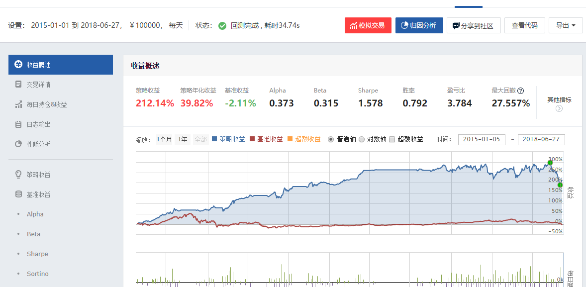 - 可见15年到16年该策略表现貌似不错，但随后17年至今则表现平平。
8. 策略评价与建立模拟
- 在学习了如何编写策略后，我们将介绍下评价策略回测的指标，如何建立模拟交易，以及除回测之外还有哪些需要关注的方面。
8.1 策略回测指标
- 如下图，一个策略回测后会给出一些指标，可以在API文档：风险指标查看这些指标的公式及基本说明。下文将补充介绍下几个重要指标。
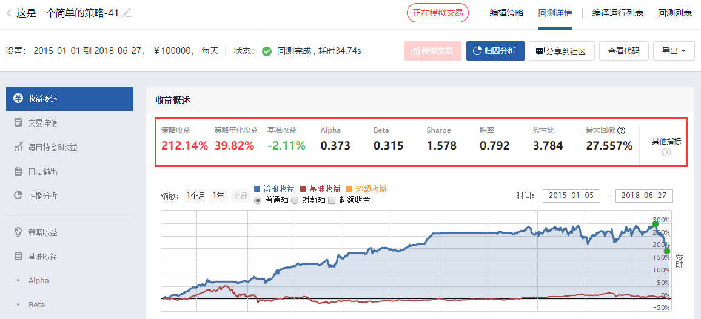 - 策略收益。这是最基础的指标，衡量回测期间策略收益率的，与时间长短相关。
- 基准收益。基准默认是沪深300指数，所以此指标是回测期间基准收益率的。一般来说，基准收益代表市场整体的收益情况，所以如果策略收益长期低于基准收益，往往意味着策略是失败的。通过set_benchmark()这个API可以自定义基准。
- 年化收益率。年化收益率是一个衡量策略盈利能力的重要指标，越大越好。刚刚讲的策略收益这个指标是和回测时间长短强相关的，比如一个普通策略运行10年肯定比优秀的策略跑半年策略收益高，但这样就不利于比较策略的盈利能力。因此，通过数学方法，把策略收益统一互相化归为一年时间的收益率，比如10年的变为平均每年的收益率，半年的变为以这半年盈利能力运行一年的收益率，如此一来，让策略盈利能力在比较时有了一个大致等同的时间标准。
- 最大回撤率。最大回撤率是一个衡量策略风险的重要指标，越小越好。新手初见这个指标的时候可能会感到一点点的困难，其实这个指标是对应着一个很自然的想法的，比如，你现在要实盘用真钱去跟一个策略操作，而你现在是知道这个策略的过去一段时间的历史收益曲线的，你觉得你的最大亏损率估计是多少？建议读者自己随手画下几条曲线当做历史收益曲线，思考下这个问题。一个经典的回答就是最大回撤率的含义，它的思路是这样的，既然我们还在拿历史数据做回测，说明我们应当还是相信历史对未来有指导意义的，那么我现在实盘用真钱去跟策略操作，接下来我们假设策略收益的未来走势应当是跟历史走势相当的，历史走势有一直涨的时候，也有一直跌的时候，那么我实盘跟策略最大亏损率应该就是，我刚开始跟策略就开始走的跟历史走势中一直跌的那一段那样，而且是一直跌且跌的最多的那段，那么历史走势中一直跌且跌的最多的那段跌跌了多少呢？用人眼一般很容易找到是哪段，而且聚宽的回测图中也标出了，如下图。不过不妨进一步思考下怎么算出最大回撤率，然后看下文档中的公式说明，看你的结果是否正确。当然，初学者知道最大回撤率越小越好可能就够了，但有志者应该借机学习如何思考如何评估风险以及量化风险，因为难度相对不高。
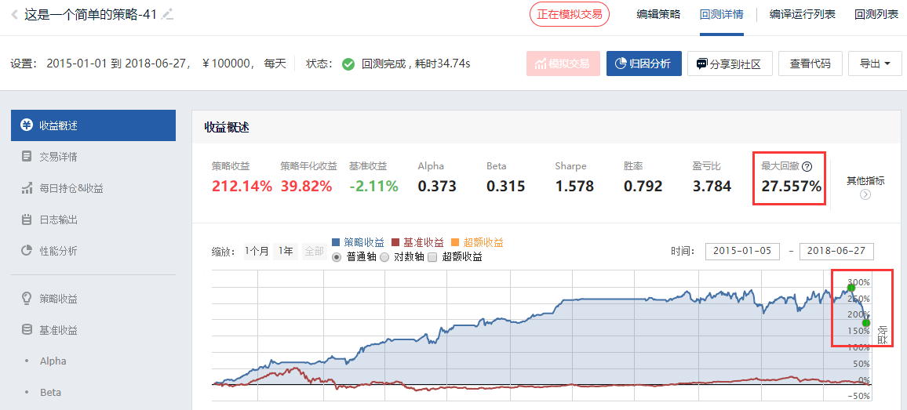 - 交易次数。交易次数其实是一个可以初步衡量策略回测结果是否可靠的指标，过少往往意味着回测结果不可靠。试想这样一种情况，别人给你推荐一个策略，策略进行了10年历史数据的回测，年化收益非常高，最大回撤非常小，你很高兴，但仔细一看，交易次数只有2次，此时，你愿意用真金白银去使用这个策略吗？你难免会想可能只是这2次操作运气好而已，这样的回测结果虽好但是不可信不可靠。其实这基于一个简单统计学思想，样本过少，则统计结果不可靠，所以足够多的交易次数才能让回测结果有说服力。目前，回测结果中不能直接看到交易次数了，可以通过回测结果页面的其他指标中的盈利次数与亏损次数相加得到，也可以通过回测结果图表下面的每日买卖大致看出，位置如下图。
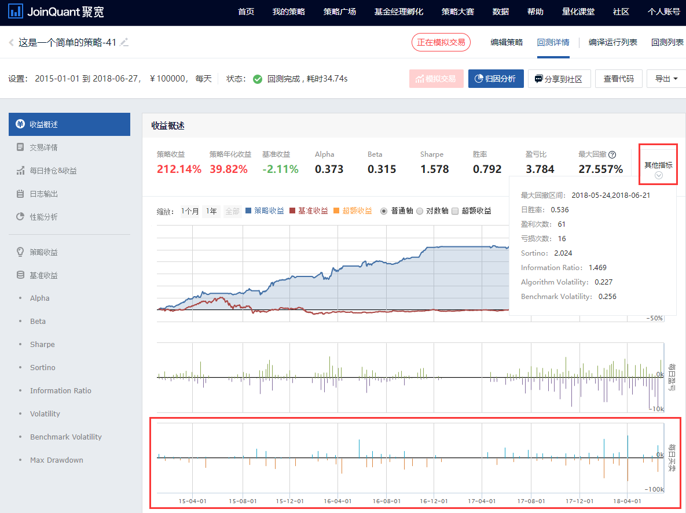 - Alpha（阿尔法）与Beta（贝塔）。在资本资产定价模型（CAPM）中，投资组合的收益被分为和市场系统风险相关与和市场系统风险无关的两部分，而Beta与Alpha这两个希腊字母则是该模型中的两个重要系数，分别代表这相关部分与无关部分。其实策略持有的股票可以看成一个投资组合，基准收益作为市场系统收益，Beta则是代表相关部分的策略收益相对市场波动的倍率，如Beta为2则代表市场涨1%，相关部分的策略收益波动涨大概2%（统计意义上并非实时精确），beta为负数代表与市场反向变动。而Alpha则代表独立于市场波动不受其影响的无关部分的策略收益，越大越好，所以如果策略年化收益为负但Alpha为正而且很大，说明策略有超过市场的盈利能力，不过策略整体盈利被与市场相关部分拉下来了（策略和牛逼，大盘很拉）。为了便于理解，Alpha与Beta的含义讲的很粗暴，建议数理基础不错的有志者有空去自学下Alpha与Beta的构造思路与过程。
- 夏普比率（Sharpe Ratio）。代表所承担的单位风险所带来的收益，越大越好。夏普比率是在资本资产定价模型进一步发展得来的，不展开讲。
8.2 建立模拟交易
- 之前讲过回测是用历史数据模拟执行策略，模拟交易是用未来的实际行情模拟执行策略，因此当策略完善的自以为差不多没什么问题时，建议建立一个模拟交易观察一段时间，当作进一步的检验。建立的模拟交易的方法很简单，点击回测结果界面，如下图，右上部红色模拟交易按钮，即可新建模拟交易。
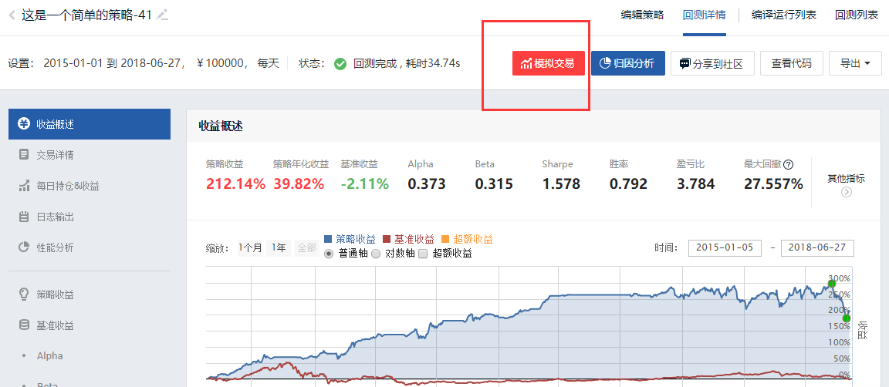 - 建立模拟交易成功后，点击聚宽导航栏我的交易，可以看到创建的模拟交易，如下图。
- 点击右边的微信通知开关，将OFF调到ON，按照指示扫描二维码，绑定微信，就能微信接收交易信号了。当策略买卖操作，微信会收到信号提醒类似下图。自定义消息内容请看API send_message。
8.3 未来函数
- 未来函数的前文讲过，即指策略利用了历史当时无法得到的信息，造成回测结果极大失真。未来函数排查方法一般是人工查看，重点看一切跟时间有关的地方，尤其注意各个API关于时间的默认处理方法。当然有时未来函数隐藏的很隐蔽，而更好但稍花时间的方法是用策略建立模拟交易，一般让模拟交易运行几天，多数未来函数问题都能被发现，因为模拟交易是不可能引入未来数据的，所以往往引入未来函数的策略无法成功运行模拟交易。
- 需要注意的是有时同一个代码的策略在模拟交易中是没有引入未来函数的，而是在历史回测中引入未来函数。此时会发现历史回测结果很好，模拟交易也能正常运行，但回测结果是失真的，而模拟交易运行时间长了往往也与回测相去甚远。一个具体的情况是，策略无意中引入了未来信息，导致策略选的股票过去一年中涨的最好的股票买，那么当然用过去一年做回测时效果会很好，但在模拟交易中可能就效果很差。
- 一条判断策略引入未来函数的经验法则是，当你发现策略回测收益极高，回撤又极低，而且各个时间段表现都特别好，感觉自己发现了自动印钞机式的交易策略时，则此策略大概率是引入未来函数了：）
8.4 运行过慢
- 策略的运行效率也是需要关注的问题，尽管新手几乎不会遇到，但需要简单了解下，有个意识。有时策略比较复杂，计算量会很大，极端时可能会造成交易延迟，延误买股票的时机，分钟级策略尤其需要关注下耗时问题，而相关函数就是enable_profile() API文档-性能分析
- 用法就是把enable_profile()这行代码复制粘贴放到策略代码的第一行。然后你成功回测后可以在回测详情页面查看性能分析的结果，如下图，从而可以查看哪行代码耗时比较多，从而有目的性的去改进。
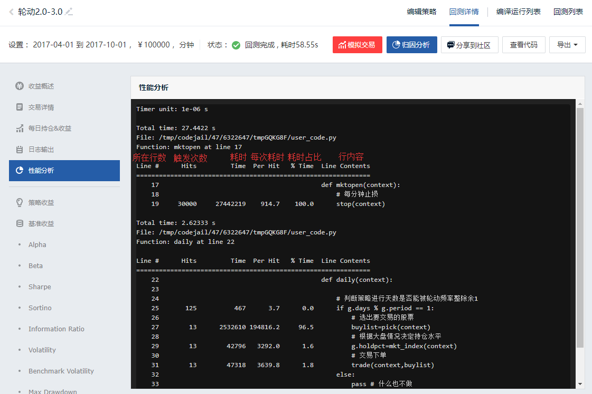
8.5 过拟合
- 过拟合（overfitting）常用于描述这样的情况。策略一般都有一些参数，如持股数量、交易频率等，选择不同的参数，固定的一份历史数据下，策略的回测结果好坏也不同，人们往往会选回测结果最好的参数作为策略的参数使用，但随后若换了一份历史数据（换一个时间段）做回测或随后用现实数据运行模拟或实盘，发现效果远不如之前的回测结果，此时很可能策略的参数过拟合了，或说之前选回测结果最好的参数这一行为使参数过拟合了。当参数多的时候，更容易发生。
- 过拟合的核心思想是，过度细致的解读样本数据，从而没有认识到本质的规律，从而使策略或系统失去了普适性，对原样本数据表现极其优异，但对非原样本数据外情况的有效性大大降低。
- 一个关于帮助理解过拟合的比喻是，老师拿一个试卷（样本数据）考学生（策略），学生成绩不理想，老师要教学生（调整参数），此时老师不是教学生学科原理，而是教学生背试卷的答案（过度拟合），当然结果会导致，当再考同一个试卷时学生肯定表现极度优异，但因为只背了答案而没理解原理，所以当换套题目或应用时学生就表现极差了。
- 因此在选择并优化策略的参数时，要考虑参数的鲁棒性，即策略好坏对参数变化的敏感性。对于参数优化与选择对应有复杂最优化理论与鲁棒性测试，对初学者在此问题建议是，控制参数数量，多测几组参数大致看下参数变化对策略的影响，另外考虑进行样本外测试，即用一份样本数据回测挑选参数，用另一份样本数据回测看选择的参数在样本外情况下表现如何。
8.6 策略失效
- 策略一般是有时效的。当你的策略十分完善，并且模拟效果理想，实盘效果也很理想，不要以为策略就会像印钞机一样一直赚钱，策略可以失效的，比如当策略运行中出现历史上罕见的情形时往往就要警惕了，比如最大回撤创历史新高，策略收益率不再增加甚至减少等。如何判断策略是否失效以及找出失效的原因并无通法，但策略失效的原因可能有以下几种，可供参考。
- 策略生效的逻辑基础不再成立。比如策略的有效性是建立在涨跌停制度下的、或是建立在某行业不断成长前提下的、或是建立在全球某资源持续稀缺前提下的等，当这些制度或前提不再成立，如制度调整、新政发布、科技进步等，那么策略自然也就失效了。因此，理解策略有效的逻辑是十分重要的。(退市规则的变化导致在2017年呼风唤雨的小市值策略面临失效的风险)
- 操作资金量过大。更大的操作资金，会导致更大的冲击成本，即使买入时价更高、卖出时价更低，而当操作资金过大使市场流动性不足承载时，冲击成本会极大的变高，大大降低利润，甚至导致亏损。所以策略是有资金容量的，建议逐步增大策略操作资金量。
- 市场上运行的相似策略过多。同类相似的策略都想赚市场上的同一份钱，然而这份钱是有限的，所以这些策略彼此间会竞争，导致策略赚钱变难，甚至完全失效赚不到钱。具体的表现可能是要买的股票买不到、想卖的股票卖不到理想价位等。因此，交易行业是非常注意保密且不适合分享的行业，而有志者则要注重培养自学能力。
- 市场出现了寄生策略。当你的策略被发现市场中的有心人发现并足够程度的监测时，他可以写出一个针对你策略的策略，从而寄生在你的策略上，比如在比你买之前买入，在你买后拉升股价后卖。这种针对你策略的寄生策略，往往会压缩你策略的盈利空间，使策略失效。
8.7 收益与风险的取舍
- 往往策略的收益能力与抗风险能力是互相制约不能兼顾的，两者之间如何取舍建议是，达到基本的收益能力后，极力追求低风险，理由是盈利水平往往可以通过增加资金量来提高。具体的讲就是，策略a是一个年化收益率300%，最大回撤率50%的策略，策略b是一个年化收益率30%，最大回撤率5%的策略，只要给策略b提供相当于策略a的10倍的资金量，两者盈利能力就是一样的，但很难让策略a有像策略b一样的抗风险能力。
9. 通过聚宽因子看板快速筛选因子
进入因子看板，首先选择如图所示的条件下的因子
解释信息：|IC|≥0.05时选股能力较强，IR>0.5时因子的稳定性较强
我们在沪深300，中证500，中证1000的基础科目衍生类因子都找不到|IC|≥0.05的因子
我们接着选择其他类别的因子，如质量类因子，若找到了|IC|≥0.05的因子，再看IR值，如果也满足IR＞0.5，则选择为备选因子。
我们发现找了一圈也没有找到有效的因子，我们把周期换为近三年，因为很难存在长期有效的因子。接着找风险因子-风格因子
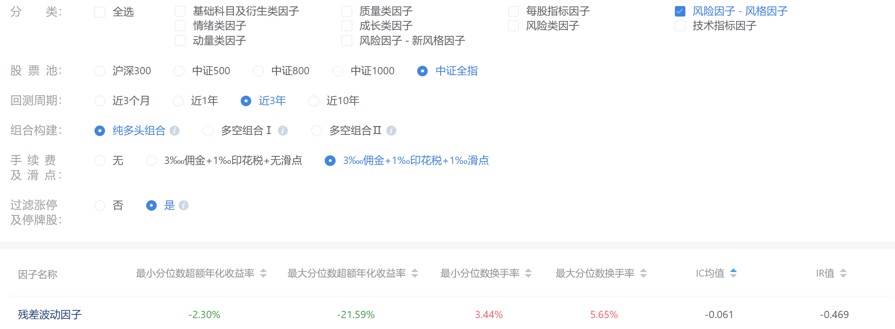
上图可以看到一个因子叫“残差波动因子”IC均值为-0.061，IR值为-0.469，比较符合要求，点看细看：
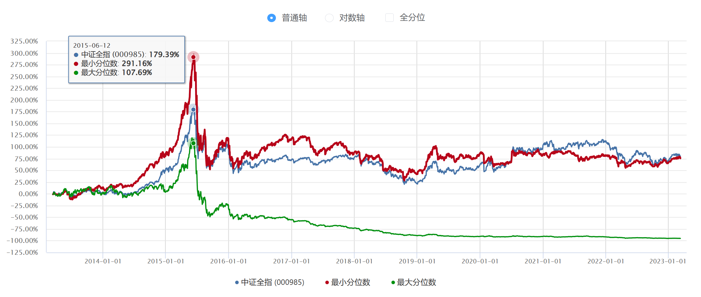
可以看到，该因子在2015年年中收益率很高，但其最大分位数是明显的反向指标，所以不予考虑。
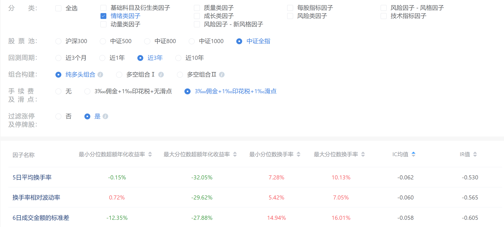
在情绪类因子中我们可以看到5日平均换手率、换手率相对波动率、6日成交金额的标准差是严格满足|IC|≥0.05且IR＞0.5的，点看细看：
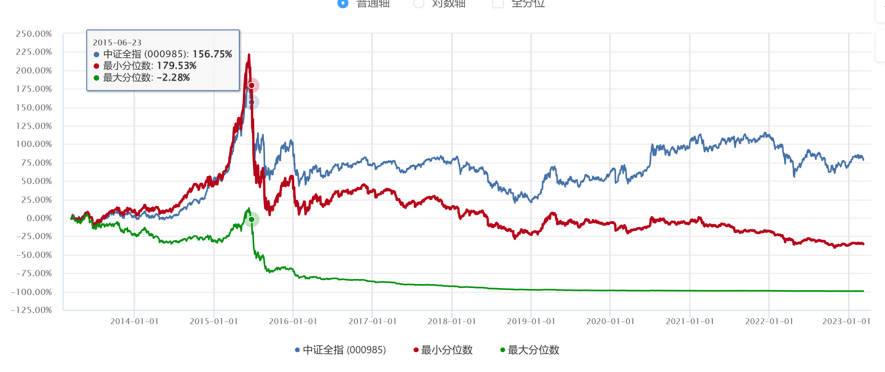
可以看到，近20年，他的最大分位数和最小分位数都没有跑赢指数（不论在沪深300还是中证全指都是这样）
再看5日平均换手率因子：
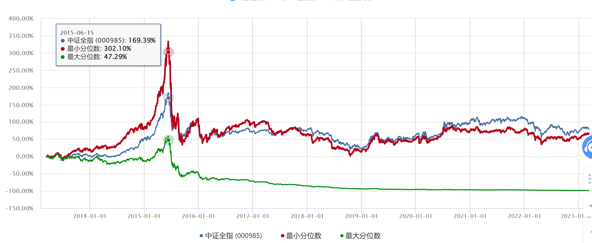
可以看到其最小分位数在某些时刻是跑赢大盘的（即买入换手率因子比较低的股票可以在一段时间跑赢大盘），即逆向投资（这些因子值比较小的时候买入）
接着看技术类指标（没有提及到的指标就是不符合要求的）：
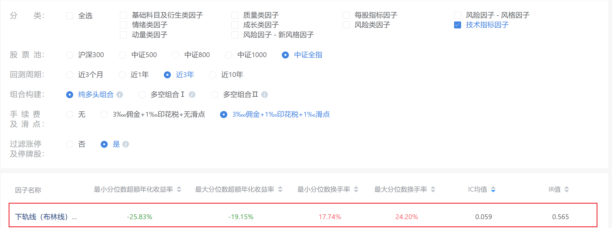
可以看到布林线指标符合要求，但细看之后近10年是明显跑输指数的，略过。
. 成长指路
- 基础知识基本讲完了，本教程也要完结了，最后一篇讲下接下来的学习方向，仅供参考。
9.1 自学意识
- 量化交易是不适合分享的行业，自学必不可少。或奇货可居，或敝帚自珍，有价值的内容很难会被公之于众，所以不要幻想会有特别有价值的系统的学习资源等着你去学，或是指望能把别人公开的东西直接搬来就能赚到钱。诚然，会有幸运的时候，但还是不要指望幸运，那没前途的，绝大多数情况都是大浪淘金式的在各种资讯中寻找着思索着只言片语。因此，自学是一个极其重要的能力，有志者需要对它像量化交易本身一样去重视。
9.2 之后去学什么？
- 首先要自问，之前讲过的内容是否都学会了，比如每篇后的自测与自学内容是否都能回答，当时学的时候不理解的地方现在是否理解等。如果明显感觉一路囫囵吞枣强行跟过来的，不妨回头再看看，再动手练练。当然，也不必太完美主义，毕竟有的坑看着不大但是真的深，不妨暂且搁下。
- 所以如果感觉学得还可以，就可以先到聚宽的量化课堂去学习下，普遍有讲解有代码，其中重点推荐以下文章。
- 请尽你所能去读懂这四个文章，你可能会感受到来自数学、编程、金融等方面的知识的不足，可能会感到有之前我没讲过的内容，可能需要你去搜索、去阅读、去询问，可能你会感觉很难搜、很难读、很少有答复，这一切将是刚离开新手村的你将遇到的各种挑战的第一个，而且其实是相对简单的一个，所以哪怕可能会花不少时间，请尽你所能去读懂这四个文章。
- 当你读懂这四个文章时，你应该可以算是基础入门了，之后就要靠你个人修行了。一个基本的模式是，有一个灵感，然后去研究与实现，在过程中学习新知识，战胜新挑战，最后或成或败都获得新的认识，继续下一个灵感，从而不断前进。当然，你在前进，你渴望的答案可能也在动，就像市场一样不断变动，或向你走来，或离你远去。（题外话：你认为世界是静止的还是运动的，或者说随机是否存在）
- 特别提下，本教程教的编程知识是非常精简的，所以建议适当简单浏览下python系统的知识，做到以后见到、或想用了知道怎么找即可。集合、元组、列表生成式这三个推荐去重点学下，这三个相对常用但看见不懂想搜索可能都想不出关键词。编程参考资料可以看下这里。
9.3 灵感的来源
- 灵感的最重要来源当然是阅读，本人水平太低就不做具体推荐了，以下列举一些可能的内容来源类别。
- 论文
- 研报
- 聚宽的量化课堂与社区
- 知乎量化交易话题下的回答
- 宽客的博客（多数是国外的）
- 各类书籍
- 关于书籍，除了专门讲量化交易的书，稍稍关注些其他领域可能带来全新的视角，比如财务分析、行为金融、数学、统计学、机器学习、甚至心理学、物理学等，据说美国做量化交易还有用到语音识别的。
- 学习时，建议用批判的眼光去看，保持自身独立思考，警惕盲从。还是那句话，量化交易行业很难有特别有价值的东西出现在大众眼前的。
- 除了阅读外，直接参与实际市场也是另一种重要的灵感来源，毕竟多数的阅读资源本身的灵感来自市场的，比如市场交易时，市场对时下新闻的反应、对量价走势的瞬时反应、不同股票或人群的反应、你自己的反应等等，你自己不亲身投入这场波云诡谲之中，很难指望事后体会到其中的种种，而这些可能带给你许多灵感。比如比较知名的冰山算法与不少技术指标当时的发明就离不开发明者对市场的了解。
9.4 关于职业化
- 想要入职量化行业，学历门槛往往较高，但别怕，学历不够的有志者不要被吓倒，毕竟人家也不是真要你的毕业证，无非是希望你能知识储量够基础好，学习新东西快有潜力，学历门槛高只是提效手段，你只要向他们证明你同样用相当的能力即可。你应该被录取的理由是什么？怎么把这个理由告诉他们？回答这个问题比量化交易简单，至少有一个好策略了想入职带他们赚钱，他们总不会还嫌你学历不够吧，当然，这是一个不必要的界，比如若你有相当的策略实现能力或因子发掘能力可能也可以了，所以建议你结合实际情况认真负责的想想，然后真的去试几次。
- 那做独立的职业量化交易可不可以呢，也是可以的，很多量化交易团队就几个人，甚至一个人的也有，但毕竟人多效率高不少。 实际上，多数还是从原本公司独立出来的，学生毕业阶段就转独立的职业做量化交易还是少，现金流压力可能比较大，但也是有做的好，后来成立公司的。
- 聚宽也有能帮助展示策略、证明自身、快速职业化与变现的栏目，而且也会有行业内人士来聚宽，找好策略与人才，比如策略被看中要谈买断、发的文章不错被录取等。注意，保护自己的成果不被无良人士窃取。总之，量化行业是相对公平看中实力的，金子总会发光。